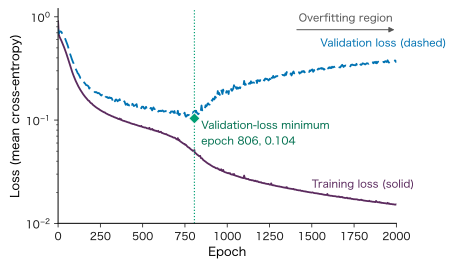
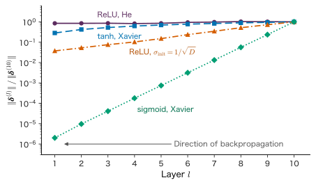

Chapter 15Backpropagation and Learning — Distributing Gradients with the Chain Rule
- A neural network has thousands or tens of thousands of weights. How can we compute, all at once, how much each of them affects the loss (the partial derivatives)?
- How can we check that the computed gradients are correct?
- Even when the gradients can be computed, when does learning still go badly? How do the initial values, the depth of the layers, and the point at which learning is stopped change the result?
If there are only two weights, we can write the loss $L$ down as a formula in the weights and differentiate it by hand. But even a network with 10 inputs, two hidden layers of 50 units each, and one output has 3151 weights and biases. If we build the gradient by “numerical differentiation,” which moves one weight slightly and measures the change in the loss, we must repeat the forward computation more than 6000 times. If, however, we follow the chain rule (differentiation of a composite function) step by step from the output side, all of the partial derivatives are obtained at a cost of about three times that of the forward computation. This is backpropagation.
In this chapter, we first follow the chain rule on a “computational graph” for a small scalar expression (Section 15.1), and then derive the four equations of a layered network component by component (Section 15.2). Next, using the same 2–2–1 network as in the simulator, we follow forward propagation, backward propagation, and the weight update with all the numerical values (Section 15.3), and then describe a method for checking gradients with finite differences (Section 15.4) and the procedure for running training with minibatches (Section 15.5). In the detailed route, we go on to initialization (Section 15.6), vanishing and exploding gradients (Section 15.7), overfitting and regularization (Section 15.8), and automatic differentiation (Section 15.9), and then connect these to the learning of materials data and interatomic potentials (Section 15.10).
- You can follow the chain rule backward on a computational graph and find the partial derivatives of an expression with branches as a “sum over paths.”
- From the definition of the error $\bm{\delta}^{(l)}=\partial\ell/\partial\bm{a}^{(l)}$, you can derive the four equations of backpropagation component by component. You can explain why the computational cost of backward propagation is about the same as that of forward propagation.
- For a 2–2–1 network, you can compute forward propagation, backward propagation, and one update by hand, and check that the loss decreases.
- You can carry out gradient checking with central differences, and explain why the error is $O(\epsilon^{2})$ and why making the step too small makes it worse because of rounding error.
- You can explain the meanings of epoch, minibatch, and learning curve, and read the effects of early stopping and weight decay from a learning curve.
- (Detailed route) You can determine the magnitude of the initial values from a condition on the variance (Xavier, He), and explain the mechanism of vanishing and exploding gradients and its relation to reverse-mode automatic differentiation.
Sections for the introductory route: 15.1, 15.2, 15.3, 15.4, 15.5, 15.12. Sections marked “Detailed Route” may be skipped on a first reading.
15.1 Computational Graphs and the Chain Rule
15.1.1 What we want to do
Learning means moving the weights little by little in the direction that makes the loss $L$ smaller (Chapter 7, Section 7.2). For that we need the partial derivative $\partial L/\partial w$ for every weight $w$. The loss of a neural network is built as a composition of functions: “weighted sum → activation function → next weighted sum → … → loss.” The derivative of a composite function is found with the chain rule. The question is the order in which to do this without waste.
A picture of the steps of a computation, drawn with circles (nodes) for values and arrows for operations, is called a computational graph. Figure 15.1 is the computational graph of a “single neuron” that multiplies the input $x$ by the weight $w$, adds the bias $b$, passes the result through tanh, and takes half the squared error with respect to the target value $y$ as the loss. Computing values from left to right is forward propagation, and computing partial derivatives from right to left is backward propagation.
15.1.2 The chain rule — multiplication along a single path
Suppose $L$ depends on $a$ through $z$, and $z$ is a function $z=h(a)$ of $a$. If we move $a$ slightly by $\Delta a$, then $z$ moves by about $h'(a)\,\Delta a$, and $L$ moves by a further factor of $\partial L/\partial z$. Therefore
\begin{equation} \pdiff{L}{a}=\pdiff{L}{z}\,\pdiff{z}{a} \label{eq:15-chain1} \end{equation}holds (University Mathematics, Section 6.4). However many stages the path has, the result is the product of the local derivatives along the path.
The key point of backward propagation is to collect the product from the right (the loss side). In Figure 15.1:
- Find $\partial L/\partial z$ (the local derivative of the loss).
- Multiply it by $\partial z/\partial a$ to make $\partial L/\partial a$.
- Multiply $\partial L/\partial a$ by $\partial a/\partial w=x$ to make $\partial L/\partial w$, and by $\partial a/\partial b=1$ to make $\partial L/\partial b$.
Note that in step 3 we are reusing $\partial L/\partial a$. If we computed the partial derivatives with respect to $w$ and $b$ separately from the left, we would compute the part $\partial L/\partial z\cdot\partial z/\partial a$ twice. Backward propagation computes the shared part only once and distributes it, however many tens of thousands of parameters there are.
15.1.3 Branching — addition over multiple paths
When a value is used two or more times in later computations, the computational graph branches. In that case, there are several paths along which the value affects the loss, and the partial derivative is the sum of the products over the paths.
Theorem 15.1: The multivariable chain rule (sum over paths)
Suppose the loss $L$ depends on $w$ only through intermediate values $u_1,\dots,u_K$, and each $u_k$ is a differentiable function of $w$. Then
\begin{equation} \pdiff{L}{w}=\sum_{k=1}^{K}\pdiff{L}{u_k}\,\pdiff{u_k}{w} \label{eq:15-chain-sum} \end{equation}holds. Here $\partial L/\partial u_k$ is the partial derivative obtained by holding the other $u_{k'}$ ($k'\ne k$) fixed and moving only $u_k$.
Derivation
Write $L=G(u_1,\dots,u_K)$. If we move $w$ by $\Delta w$, each $u_k$ moves by $\Delta u_k=\pdiff{u_k}{w}\Delta w+o(\Delta w)$. If $G$ is differentiable, then by its total differential (the first-order Taylor expansion),
$$ \begin{aligned} \Delta L&=\sum_{k=1}^{K}\pdiff{G}{u_k}\,\Delta u_k+o(\Delta w)\\ &=\Bigl(\sum_{k=1}^{K}\pdiff{G}{u_k}\pdiff{u_k}{w}\Bigr)\Delta w+o(\Delta w). \end{aligned} $$Dividing both sides by $\Delta w$ and letting $\Delta w\to0$, we obtain Eq. \eqref{eq:15-chain-sum}.
∎
Illustration 15.1: An expression that uses the same value twice
Let $u=w+1$, $v=2w$, $L=uv$, and $w=3$. In forward propagation, $u=4$, $v=6$, $L=24$. In backward propagation, $\partial L/\partial u=v=6$ and $\partial L/\partial v=u=4$, so by Eq. \eqref{eq:15-chain-sum}
$$ \pdiff{L}{w}=\pdiff{L}{u}\cdot1+\pdiff{L}{v}\cdot2=6+8=14 . $$Expanding directly, $L=(w+1)\cdot2w=2w^{2}+2w$, and $\diff{L}{w}=4w+2=14$, which agrees. Counting only one of the two paths gives 6 or 8, which is wrong.
In a neural network, the output $z_j$ of a hidden unit is distributed to all the units of the next layer, so branching always occurs. The “sum” that appears in the expression $\bm{W}^{\tp}\bm{\delta}$ in Section 15.2 is this sum over paths.
Example 15.1: Forward and backward propagation for a single neuron
In the computational graph of Figure 15.1, let $x=2.0$, $w=0.3$, $b=-0.1$, and $y=1.0$ (a dimensionless numerical example). Here $a=wx+b$, $z=\tanh a$, and $L=\tfrac12(z-y)^{2}$. (1) Find $a,z,L$ by forward propagation. (2) Find $\partial L/\partial z$, $\partial L/\partial a$, $\partial L/\partial w$, and $\partial L/\partial b$ by backward propagation. (3) Also find the partial derivative $\partial L/\partial x$ with respect to the input.
Solution. (1) $a=0.3\times2.0+(-0.1)=0.5$, $z=\tanh0.5=0.462117$, $L=\tfrac12(0.462117-1)^{2}$ $=\tfrac12\times0.289318=0.144659$.
(2) The local derivative of the loss is $\partial L/\partial z=z-y=-0.537883$. The derivative of tanh is $\diff{}{a}\tanh a=1-\tanh^{2}a$, so $\partial z/\partial a=1-0.462117^{2}=0.786448$. By Eq. \eqref{eq:15-chain1},
$$ \begin{aligned} \pdiff{L}{a}&=(-0.537883)\times0.786448\\ &=-0.423017 . \end{aligned} $$Since $a=wx+b$, $\partial a/\partial w=x=2.0$ and $\partial a/\partial b=1$. Hence $\partial L/\partial w=-0.423017\times2.0=-0.846033$ and $\partial L/\partial b=-0.423017$.
(3) Since $\partial a/\partial x=w=0.3$, $\partial L/\partial x=-0.423017\times0.3=-0.126905$. The partial derivative with respect to the input is obtained “for free” by the same backward propagation. The forces on atoms in Section 15.10 use this quantity.
Since $\partial L/\partial w\lt0$, increasing $w$ slightly decreases the loss. Indeed, if we form a central difference with $w$ set to $0.3\pm10^{-6}$, we obtain $-0.846033$ (Section 15.4).
15.2 Derivation of Backpropagation — Four Equations
15.2.1 Notation and dimensions
We use the same notation as in Chapter 14 (Section 14.3). We restate here what we need.
Definition 15.1: A fully connected network and the loss of a single data point
Let the layers be $l=1,\dots,n_{\mathrm{layer}}$ ($n_{\mathrm{layer}}$ is the number of layers; $L$ is reserved for the loss), let the number of units in layer $l$ be $D_l$, and let the input be $\bm{z}^{(0)}=\bm{x}\in\R^{D_0}$. In each layer we compute
\begin{equation} \begin{aligned} \bm{a}^{(l)}&=\bm{W}^{(l)}\bm{z}^{(l-1)}+\bm{b}^{(l)},\\ \bm{z}^{(l)}&=h\bigl(\bm{a}^{(l)}\bigr) \end{aligned} \label{eq:15-forward} \end{equation}Here $\bm{W}^{(l)}\in\R^{D_l\times D_{l-1}}$ (the component $W^{(l)}_{ji}$ is the weight from unit $i$ in layer $l-1$ to unit $j$ in layer $l$), $\bm{b}^{(l)}\in\R^{D_l}$, and $\bm{a}^{(l)},\bm{z}^{(l)}\in\R^{D_l}$. The activation function $h$ acts component by component. Only the output layer $l=n_{\mathrm{layer}}$ uses a function $f_{\mathrm{out}}$ matched to the kind of output, and the predicted value is $\hat{\bm{y}}=f_{\mathrm{out}}(\bm{a}^{(n_{\mathrm{layer}})})$.
We write the loss of a single data point $(\bm{x}_n,\bm{y}_n)$ as $\ell_n=\ell(\hat{\bm{y}}_n,\bm{y}_n)$. We define the error of layer $l$ as
\begin{equation} \begin{aligned} \bm{\delta}^{(l)}&\equiv\pdiff{\ell}{\bm{a}^{(l)}}\in\R^{D_l},\\ \delta^{(l)}_j&=\pdiff{\ell}{a^{(l)}_j} \end{aligned} \label{eq:15-delta-def} \end{equation}Although it is called an “error,” it is not the difference between the output and the target value itself; it is the rate of change of the loss when the weighted sum $a^{(l)}_j$ is moved slightly.
Notation: The loss is written as an average
In this chapter and in Chapter 14, the loss of a minibatch $\mathcal{B}$ (a set of data indices, of size $\abs{\mathcal{B}}=B$) is written as the mean $L=\frac1B\sum_{n\in\mathcal{B}}\ell_n$. This is the same convention as in Chapter 7, and it differs by a factor of $B$ from the “sum” convention of Chapters 8 and 9. The gradient is likewise the average of the individual gradients, so below we first derive results for the loss $\ell$ of a single data point and take the average at the end. The sigmoid is written with its argument, $\sigma(a)=1/(1+e^{-a})$, to distinguish it from the $\sigma$ of the standard deviation.
15.2.2 The error of the output layer
If we choose the pair of output layer and loss as in Chapter 14 (Section 14.6), the error of the output layer becomes simple, as follows. Here we verify the two pairs used in this chapter.
- Identity output + half the squared error (regression): $\hat{y}=a^{(n_{\mathrm{layer}})}$, $\ell=\tfrac12(\hat{y}-y)^{2}$. Then $\partial\ell/\partial a^{(n_{\mathrm{layer}})}=(\hat{y}-y)\cdot1=\hat{y}-y$.
- Sigmoid output + cross-entropy (binary classification): $\hat{y}=\sigma(a)$, $\ell=-[y\ln\hat{y}+(1-y)\ln(1-\hat{y})]$. Using $\sigma'(a)=\sigma(a)(1-\sigma(a))=\hat{y}(1-\hat{y})$, we obtain
Softmax output + cross-entropy (multiclass classification) also gives the same form $\hat{\bm{y}}-\bm{y}$ (Chapter 14, Section 14.6). Altogether we can write
\begin{equation} \bm{\delta}^{(n_{\mathrm{layer}})}=\hat{\bm{y}}-\bm{y} \label{eq:15-bp1} \end{equation}.
15.2.3 The error of a hidden layer — a backward recurrence relation
Through $z^{(l)}_j=h(a^{(l)}_j)$, the quantity $a^{(l)}_j$ of unit $j$ in layer $l$ enters the weighted sums $a^{(l+1)}_k$ of all units $k=1,\dots,D_{l+1}$ in layer $l+1$. The loss depends on $a^{(l)}_j$ only through these $a^{(l+1)}_k$, so the sum over paths in Theorem 15.1 can be used.
Derivation: The error of a hidden layer
Setting $u_k=a^{(l+1)}_k$ in Eq. \eqref{eq:15-chain-sum}, we get
$$ \begin{aligned} \delta^{(l)}_j=\pdiff{\ell}{a^{(l)}_j}&=\sum_{k=1}^{D_{l+1}}\pdiff{\ell}{a^{(l+1)}_k}\,\pdiff{a^{(l+1)}_k}{a^{(l)}_j}\\ &=\sum_{k=1}^{D_{l+1}}\delta^{(l+1)}_k\,\pdiff{a^{(l+1)}_k}{a^{(l)}_j}. \end{aligned} $$Written in components, Eq. \eqref{eq:15-forward} reads $a^{(l+1)}_k=\sum_{i=1}^{D_l}W^{(l+1)}_{ki}\,h(a^{(l)}_i)+b^{(l+1)}_k$. Taking the partial derivative of this with respect to $a^{(l)}_j$, only the term with $i=j$ in the sum survives.
$$ \pdiff{a^{(l+1)}_k}{a^{(l)}_j}=W^{(l+1)}_{kj}\,h'\bigl(a^{(l)}_j\bigr). $$Substituting this and pulling $h'(a^{(l)}_j)$, which does not depend on $k$, out of the sum, we get
$$ \delta^{(l)}_j=h'\bigl(a^{(l)}_j\bigr)\sum_{k=1}^{D_{l+1}}W^{(l+1)}_{kj}\,\delta^{(l+1)}_k . $$The sum $\sum_k W^{(l+1)}_{kj}\delta^{(l+1)}_k$ is the product of the $j$th row of the matrix $\bm{W}^{(l+1)\tp}$ and the vector $\bm{\delta}^{(l+1)}$, that is, $\bigl(\bm{W}^{(l+1)\tp}\bm{\delta}^{(l+1)}\bigr)_j$. Denoting the component-wise product by $\odot$ (the Hadamard product), we obtain the vector form, Eq. \eqref{eq:15-bp2}.
∎
is used in the order $l=n_{\mathrm{layer}}-1,\dots,1$.
Let us check the sizes. Since $\bm{W}^{(l+1)\tp}\in\R^{D_l\times D_{l+1}}$ and $\bm{\delta}^{(l+1)}\in\R^{D_{l+1}}$, the product lies in $\R^{D_l}$, and it can be multiplied component by component with $h'(\bm{a}^{(l)})\in\R^{D_l}$. In forward propagation, $\bm{W}^{(l+1)}$ carries values from layer $l$ to layer $l+1$; in backward propagation, the transpose of the same weights carries errors from layer $l+1$ back to layer $l$ (Figure 15.2).
15.2.4 Gradients with respect to weights and biases
The weight $W^{(l)}_{ji}$ enters only $a^{(l)}_j$ (it does not appear in the weighted sums of other units $j'\ne j$). Therefore there is a single path, and we have the form of Eq. \eqref{eq:15-chain1}.
$$ \begin{aligned} \pdiff{\ell}{W^{(l)}_{ji}}&=\pdiff{\ell}{a^{(l)}_j}\,\pdiff{a^{(l)}_j}{W^{(l)}_{ji}}=\delta^{(l)}_j\,z^{(l-1)}_i ,\\ \pdiff{\ell}{b^{(l)}_j}&=\delta^{(l)}_j\cdot1 . \end{aligned} $$Here we used $\partial a^{(l)}_j/\partial W^{(l)}_{ji}=z^{(l-1)}_i$, which follows from $a^{(l)}_j=\sum_i W^{(l)}_{ji}z^{(l-1)}_i+b^{(l)}_j$. The matrix whose $(j,i)$ component is $\delta_j z_i$ is the product (the outer product) of the column vector $\bm{\delta}$ and the row vector $\bm{z}^{\tp}$.
Theorem 15.2: The four equations of backpropagation
For the network of Definition 15.1 and a loss for which the error of the output layer is $\hat{\bm{y}}-\bm{y}$, the gradient of the loss $\ell$ of a single data point is obtained from the following four equations.
- Output layer: $\bm{\delta}^{(n_{\mathrm{layer}})}=\hat{\bm{y}}-\bm{y}$ (Eq. \eqref{eq:15-bp1})
- Hidden layers (in order from the output side): $\bm{\delta}^{(l)}=h'(\bm{a}^{(l)})\odot(\bm{W}^{(l+1)\tp}\bm{\delta}^{(l+1)})$ (Eq. \eqref{eq:15-bp2})
- Weights: $\partial\ell/\partial\bm{W}^{(l)}=\bm{\delta}^{(l)}\bm{z}^{(l-1)\tp}\in\R^{D_l\times D_{l-1}}$ (Eq. \eqref{eq:15-bp3})
- Biases: $\partial\ell/\partial\bm{b}^{(l)}=\bm{\delta}^{(l)}\in\R^{D_l}$ (Eq. \eqref{eq:15-bp4})
Equation \eqref{eq:15-bp3} can be read as “the gradient of a weight = (the error of the receiver) × (the output of the sender).” If the output $z^{(l-1)}_i$ of the sender is 0, the gradient of that weight is also 0 (this matters for the “all-zero initial value” in Section 15.6).
Extension to minibatches. By the linearity of differentiation, the gradient of the minibatch loss $L=\frac1B\sum_{n\in\mathcal{B}}\ell_n$ is the average of the individual gradients.
\begin{equation} \begin{aligned} \pdiff{L}{\bm{W}^{(l)}}&=\frac1B\sum_{n\in\mathcal{B}}\bm{\delta}^{(l)}_n\bm{z}^{(l-1)\tp}_n\\ &=\frac1B\,\bm{\Delta}^{(l)}\bm{Z}^{(l-1)\tp} \end{aligned} \label{eq:15-batch} \end{equation}Here $\bm{\Delta}^{(l)}\in\R^{D_l\times B}$ is the matrix whose columns are the $\bm{\delta}^{(l)}_n$ of the individual data points, and $\bm{Z}^{(l-1)}\in\R^{D_{l-1}\times B}$ is the matrix whose columns are the $\bm{z}^{(l-1)}_n$. Because the sum of outer products becomes a single matrix product, minibatch computation can be carried out efficiently on hardware for matrix operations (such as a GPU).
15.2.5 Procedure and computational cost
- Forward propagation: in the order $l=1,\dots,n_{\mathrm{layer}}$, compute $\bm{a}^{(l)}$ and $\bm{z}^{(l)}$ by Eq. \eqref{eq:15-forward}, and store them all. Finally compute $\ell$.
- Backward propagation: starting from $\bm{\delta}^{(n_{\mathrm{layer}})}$, in the order $l=n_{\mathrm{layer}},\dots,1$, form the gradients by Eqs. \eqref{eq:15-bp3} and \eqref{eq:15-bp4}, and proceed to $\bm{\delta}^{(l-1)}$ by Eq. \eqref{eq:15-bp2}. The stored $\bm{a}^{(l)}$ and $\bm{z}^{(l-1)}$ are used here.
import numpy as np
def backprop(Ws, bs, x, y, h, dh):
"""For a single data point (x, y), return dl/dW and dl/db for all layers.
Hidden layers use the activation h (derivative dh); the output is sigmoid + cross-entropy."""
n_layer = len(Ws)
zs, acts = [x], [] # z^(0)=x, ..., z^(n_layer)
for l in range(n_layer): # forward propagation (store a and z)
a = Ws[l] @ zs[-1] + bs[l]
acts.append(a)
zs.append(h(a) if l < n_layer - 1 else 1 / (1 + np.exp(-a)))
delta = zs[-1] - y # error of the output layer δ^(n_layer)
gW, gb = [None] * n_layer, [None] * n_layer
for l in reversed(range(n_layer)): # backward propagation
gW[l] = np.outer(delta, zs[l]) # δ^(l) z^(l-1)ᵀ
gb[l] = delta
if l > 0:
delta = dh(acts[l - 1]) * (Ws[l].T @ delta)
return gW, gbCode 15.1: A minimal implementation of backpropagation (numpy). Python lists are 0-indexed, so Ws[l] corresponds to $\bm{W}^{(l+1)}$ in the text and zs[l] to $\bm{z}^{(l)}$. With the weights of Section 15.3, it gives the gradients in Table 15.2.
Let us count the computational cost. Measured by the number of multiply–add pairs (multiply-accumulate operations), the main work of forward propagation is the matrix–vector products, $\sum_{l=1}^{n_{\mathrm{layer}}}D_lD_{l-1}$ operations. In backward propagation, $\bm{W}^{\tp}\bm{\delta}$ in Eq. \eqref{eq:15-bp2} takes $\sum_{l=2}^{n_{\mathrm{layer}}}D_lD_{l-1}$ operations and the outer products in Eq. \eqref{eq:15-bp3} take $\sum_{l=1}^{n_{\mathrm{layer}}}D_lD_{l-1}$ operations, which together are about twice the cost of forward propagation. Evaluating the activation function and its derivative takes on the order of $\sum_lD_l$ operations, which is smaller than this.
Example 15.2: Comparing the cost of backpropagation and numerical differentiation
Consider a network with 10 inputs, two hidden layers of 50 units each, and 1 output (10–50–50–1). (1) Find the total number $P$ of weights and biases. (2) For a single data point, find the numbers of multiply–add operations for forward propagation and for backward propagation. (3) If all the partial derivatives with respect to the parameters are computed by the central difference $[\ell(w+\epsilon)-\ell(w-\epsilon)]/(2\epsilon)$, how many forward propagations are needed? In multiply–add operations, how many times the cost of backpropagation is this?
Solution. (1) Layer $l$ has $D_l(D_{l-1}+1)$ parameters, so $P=50\times11+50\times51+1\times51$ $=550+2550+51=3151$.
(2) Forward propagation: $50\times10+50\times50+1\times50$ $=500+2500+50=3050$ operations. Backward propagation: $\bm{W}^{\tp}\bm{\delta}$ takes $50\times50+1\times50=2550$ operations (we do not propagate back past the first layer), and the outer products take $3050$ operations, for a total of $5600$ operations. Forward and backward propagation together take $8650$ operations, about $2.8$ times forward propagation alone.
(3) Each parameter needs two evaluations, $\ell(w+\epsilon)$ and $\ell(w-\epsilon)$, so $2P=6302$ forward propagations are required. The multiply–add count is $6302\times3050=1.92\times10^{7}$, about $2.2\times10^{3}$ times that of backpropagation (8650 operations including the forward propagation). The gap widens in proportion to the number of parameters $P$.
Why backward?
The loss $\ell$ is a single scalar, while the parameters are numerous. If we start from the output side, updating just one vector $\partial\ell/\partial\bm{a}^{(l)}$ once per layer gives the partial derivatives of all the parameters of that layer through an outer product. If we start from the input side, a separate computation is needed for each “which parameter was moved.” This asymmetry is exactly the difference between the “reverse mode” and the “forward mode” of automatic differentiation in Section 15.9.
15.3 Following the Numbers — One Step of a 2–2–1 Network
15.3.1 Setup
We take the network with the same default values as Simulator 15.1: two inputs, two hidden units, and one output (2–2–1). For a single data point, we follow forward propagation, backward propagation, and the weight update with every number written out. The hidden-layer activation is tanh, the output is a sigmoid, and the loss is the cross-entropy.
- Data: $\bm{x}=(1.0,\ 0.5)^{\tp}$, $y=1$ (a dimensionless numerical example).
- Weights: $\bm{W}^{(1)}=\begin{pmatrix}0.5&-0.3\\0.8&0.2\end{pmatrix}$ (the first row holds the weights into hidden unit 1), $\bm{b}^{(1)}=(0.1,\ -0.1)^{\tp}$, $\bm{W}^{(2)}=(1.0,\ -1.0)\in\R^{1\times2}$, $b^{(2)}=0.2$.
- Learning rate $\eta=0.5$. There are $2\times2+2+2+1=9$ parameters in all.
Numbers are written rounded to six digits, but the unrounded values are used in the next stage of the computation (so the last digit may be off by one).
15.3.2 Forward propagation
$$ \begin{aligned} a^{(1)}_1&=0.5\times1.0+(-0.3)\times0.5+0.1=0.45,\\ a^{(1)}_2&=0.8\times1.0+0.2\times0.5+(-0.1)=0.8 . \end{aligned} $$Passing these through tanh gives $z^{(1)}_1=\tanh0.45=0.421899$ and $z^{(1)}_2=\tanh0.8=0.664037$. The output layer gives
$$ \begin{aligned} a^{(2)}&=1.0\times0.421899+(-1.0)\times0.664037+0.2\\ &=-0.0421378, \end{aligned} $$so $\hat{y}=\sigma(-0.0421378)=0.489467$, and since $y=1$ the loss is $L=-\ln\hat{y}=0.714438$. Because $\hat{y}$ is slightly below 0.5, the loss is a little larger than the “fifty-fifty” value $\ln2=0.693147$.
| Quantity | Unit 1 | Unit 2 | Computation |
|---|---|---|---|
| $a^{(1)}_j$ | 0.450000 | 0.800000 | $\bm{W}^{(1)}\bm{x}+\bm{b}^{(1)}$ |
| $z^{(1)}_j$ | 0.421899 | 0.664037 | $\tanh a^{(1)}_j$ |
| $a^{(2)}$ | −0.0421378 | $\bm{W}^{(2)}\bm{z}^{(1)}+b^{(2)}$ | |
| $\hat{y}$ | 0.489467 | $\sigma(a^{(2)})$ | |
| $L$ | 0.714438 | $-\ln\hat{y}$ | |
15.3.3 Backward propagation
By Eq. \eqref{eq:15-bp1}, the error of the output layer is $\delta^{(2)}=\hat{y}-y=0.489467-1=-0.510533$. By Eqs. \eqref{eq:15-bp3} and \eqref{eq:15-bp4}, the gradients for the weights and bias of the output layer are
$$ \begin{aligned} \pdiff{L}{W^{(2)}_1}&=\delta^{(2)}z^{(1)}_1\\ &=-0.510533\times0.421899=-0.215393,\\ \pdiff{L}{W^{(2)}_2}&=\delta^{(2)}z^{(1)}_2\\ &=-0.510533\times0.664037=-0.339013, \end{aligned} $$and $\partial L/\partial b^{(2)}=-0.510533$.
Now we pass the error back to the hidden layer. The derivative of tanh is $h'(a)=1-\tanh^{2}a=1-z^{2}$, so from the stored $z^{(1)}_j$ we get $h'(a^{(1)}_1)=1-0.421899^{2}=0.822001$ and $h'(a^{(1)}_2)=1-0.664037^{2}=0.559055$. Multiplying these component by component by $\bm{W}^{(2)\tp}\delta^{(2)}=(1.0,\,-1.0)^{\tp}\times(-0.510533)$ $=(-0.510533,\ 0.510533)^{\tp}$, Eq. \eqref{eq:15-bp2} gives
$$ \begin{aligned} \delta^{(1)}_1&=0.822001\times(-0.510533)=-0.419659,\\ \delta^{(1)}_2&=0.559055\times0.510533=0.285416 . \end{aligned} $$The errors of the two hidden units have opposite signs because $W^{(2)}_1=+1.0$ and $W^{(2)}_2=-1.0$ have opposite signs. The gradient on the input side is $\partial L/\partial W^{(1)}_{ji}=\delta^{(1)}_jx_i$, and since $x_2/x_1=0.5$, the second column is exactly half of the first column.
| Quantity | Value | Formula |
|---|---|---|
| $\delta^{(2)}$ | −0.510533 | $\hat{y}-y$ |
| $h'(\bm{a}^{(1)})$ | (0.822001, 0.559055) | $1-z_j^{2}$ |
| $\bm{\delta}^{(1)}$ | (−0.419659, 0.285416) | Eq. \eqref{eq:15-bp2} |
| $\partial L/\partial\bm{W}^{(2)}$ | (−0.215393, −0.339013) | $\delta^{(2)}\bm{z}^{(1)\tp}$ |
| $\partial L/\partial b^{(2)}$ | −0.510533 | $\delta^{(2)}$ |
| $\partial L/\partial\bm{W}^{(1)}$ | ((−0.419659, −0.209829), (0.285416, 0.142708)) | $\bm{\delta}^{(1)}\bm{x}^{\tp}$ |
| $\partial L/\partial\bm{b}^{(1)}$ | (−0.419659, 0.285416) | $\bm{\delta}^{(1)}$ |
| $\norm{\bm{g}}^{2}$ (sum of the squares of the nine components) | 1.00151 | $\norm{\bm{g}}=1.00076$ |
15.3.4 One update, and checking that the loss decreased
We update all nine parameters at once by gradient descent $w\leftarrow w-\eta\,\partial L/\partial w$ ($\eta=0.5$). For example, $W^{(1)}_{11}$ becomes $0.5-0.5\times(-0.419659)$ $=0.709829$, and $W^{(2)}_2$ becomes $-1.0-0.5\times(-0.339013)$ $=-0.830494$.
| Quantity | Before update | After update |
|---|---|---|
| $\bm{W}^{(1)}$ | ((0.5, −0.3), (0.8, 0.2)) | ((0.709829, −0.195085), (0.657292, 0.128646)) |
| $\bm{b}^{(1)}$ | (0.1, −0.1) | (0.309829, −0.242708) |
| $\bm{W}^{(2)}$ | (1.0, −1.0) | (1.10770, −0.830494) |
| $b^{(2)}$ | 0.2 | 0.455266 |
| $\bm{a}^{(1)}$ | (0.45, 0.8) | (0.922116, 0.478907) |
| $\bm{z}^{(1)}$ | (0.421899, 0.664037) | (0.726897, 0.445368) |
| $a^{(2)}$ | −0.0421378 | 0.890573 |
| $\hat{y}$ | 0.489467 | 0.709008 |
| $L$ | 0.714438 | 0.343888 |
The loss decreased from $0.714438$ to $0.343888$, a drop of $0.370550$. The decrease predicted by the first-order Taylor expansion is
\begin{equation} \begin{aligned} L(\bm{w}-\eta\bm{g})&\approx L(\bm{w})-\eta\,\bm{g}^{\tp}\bm{g}\\ &=L(\bm{w})-\eta\norm{\bm{g}}^{2} \end{aligned} \label{eq:15-firstorder} \end{equation}namely $0.5\times1.00151=0.500756$ ($\bm{g}$ is the gradient vector formed by arranging the nine partial derivatives). The actual decrease is smaller than this. The value $\eta=0.5$ is not small enough for the first-order approximation to hold, and the curvature of the loss (the second-order term) has an effect. As in Figure 15.4(b), the actual value approaches the first-order approximation as $\eta\to0$.

Example 15.3: What if the target value is $y=0$?
Use the same weights and input as in Section 15.3.1, and change only the target value to $y=0$. (1) Find the loss $L$. (2) Find $\delta^{(2)}$, $\bm{\delta}^{(1)}$, and $\partial L/\partial\bm{W}^{(2)}$, and compare them with the case $y=1$. (3) After one update with $\eta=0.5$, $\hat{y}$ and $L$ are 0.272705 and 0.318423. In which direction did $\hat{y}$ move?
Solution. (1) Forward propagation does not depend on the target value, so $\hat{y}=0.489467$ remains. For $y=0$ the cross-entropy is $L=-\ln(1-\hat{y})$ $=-\ln0.510533=0.672300$.
(2) $\delta^{(2)}=\hat{y}-y=0.489467$ (positive). $\delta^{(1)}_1=0.822001\times(1.0\times0.489467)$ $=0.402343$, $\delta^{(1)}_2=0.559055\times(-1.0\times0.489467)$ $=-0.273639$. $\partial L/\partial\bm{W}^{(2)}$ $=0.489467\times(0.421899,\ 0.664037)$ $=(0.206506,\ 0.325024)$.
Compared with the case $y=1$, the sign of $\delta^{(2)}$ is reversed, so by Eqs. \eqref{eq:15-bp2}–\eqref{eq:15-bp4} the signs of all the gradients are reversed. The magnitudes differ slightly because $\abs{\hat{y}-y}$ changed from $0.510533$ to $0.489467$ (the ratio is 0.958738).
(3) $\hat{y}$ moved from 0.489467 to 0.272705, toward the side of $y=0$, and the loss decreased from 0.672300 to 0.318423.
The following simulator lets you check the computation above one stage at a time by pressing buttons.
Simulator 15.1: Following one step with numbers
For the 2–2–1 network (tanh hidden layer, sigmoid output, cross-entropy), this simulator advances forward propagation, backward propagation, and the weight update one stage at a time, adding the numbers to the figure and the table. The default weights, input, and learning rate are the same as in Section 15.3.1. The simulator is limited to one hidden layer and one output, and uses only plain gradient descent (numbers in the figure are displayed rounded to four digits, and those in the table to six).
Open in a separate window at full size →
Operate and Observe
- With the defaults just after opening, press “Forward propagation” → the figure and the “table of numbers” show $a^{(1)}=(0.45,\,0.8)$, $z^{(1)}=(0.421899,\,0.664037)$, $a^{(2)}=-0.0421378$, $\hat{y}=0.489467$, and $L=0.714438$. Compare with Table 15.1.
- Press “Backward propagation” → $\delta^{(2)}=-0.510533$, $\delta^{(1)}=(-0.419659,\,0.285416)$, and the $\partial L/\partial w$ of each weight appear. Compare with Table 15.2 and with the values obtained by substituting numbers into Eqs. \eqref{eq:15-bp2} and \eqref{eq:15-bp3}.
- Press “Update weights” → beside the lines in the figure, entries take the form “old → new”, and the readout shows the loss after the update, 0.343888, and the decrease predicted by the first-order approximation, $-\eta\norm{\bm{g}}^{2}=-0.500756$. Compare with Table 15.3 and Eq. \eqref{eq:15-firstorder}.
- After the update, the button’s name changes to “Forward propagation (with the updated weights)”. Pressing it starts the next step with the updated weights. Repeat “Backward propagation” and “Update weights” → the loss decreases as 0.714438 → 0.343888 → 0.225670 → 0.166949 → 0.132260 → 0.109492 (Figure 15.4(a)).
- Press “Return to the start”, then set the target value to “$y$ = 0” and advance three stages → the values are those of Example 15.3, and the signs of all the gradients are opposite to those for $y=1$.
- Press “Return to the start”, change the learning rate $\eta$ to 0.05, 1, 2, and 5, and advance three stages in each case → the losses after the update are 0.665712, 0.170650, 0.0607613, and 0.0157109 (Figure 15.4(b)).
Questions After Operating
- With $\eta=5$, one update lowers the loss to 0.0157 and gives $\hat{y}=0.984$. In this case $\bm{W}^{(1)}$ changes greatly, to ((2.59829, 0.749147), (−0.627080, −0.513540)). Can this be called good learning?
Sample answers
The network fits this one data point, but the weights moved a great deal in one update, and even the sign of the weight into hidden unit 2 was reversed. When learning from many data points, moving the weights greatly to fit one data point increases the loss on other data points, and the loss tends to oscillate or diverge (Chapter 7, Section 7.2). A decrease in the loss of one data point is not evidence that the learning rate is appropriate.
- If the input is set to $x_2=0$, which gradients become 0?
Sample answers
By Eq. \eqref{eq:15-bp3}, $\partial L/\partial W^{(1)}_{j2}=\delta^{(1)}_jx_2=0$ ($j=1,2$). The two weights leaving the input $x_2$ do not move for this data point. A weight whose sender has the value 0 is not learned.
- In step 4, why does the decrease of the loss slow down when we keep updating on the same data?
Sample answers
As $\hat{y}$ approaches 1, $\delta^{(2)}=\hat{y}-1$ approaches 0, and all the gradients in Eqs. \eqref{eq:15-bp2}–\eqref{eq:15-bp4} become small, so the amount moved in one update also decreases. Just before the second update, $\norm{\bm{g}}^{2}=0.282656$ (for the first update it was 1.00151).
15.4 Gradient Checking — Verifying the Answer with Finite Differences
15.4.1 Why check?
The equations of backward propagation are short, but implementations easily go wrong: indices get swapped, a transpose is forgotten, or the derivative of the activation function is mixed up. Moreover, even when the gradient is slightly wrong, the loss often still decreases reasonably well, so a mistake cannot be noticed from the learning curve alone. We therefore compare the gradient obtained by backpropagation with a finite difference built from loss values alone. This is called gradient checking (gradient check).
Definition 15.2: Forward difference and central difference
Move just one parameter $w$ by $\pm\epsilon$ ($\epsilon\gt0$ is a small step), keep the others fixed, and from the resulting loss values form
\begin{equation} \begin{aligned} \hat{g}_{\mathrm{fwd}}&=\frac{L(w{+}\epsilon)-L(w)}{\epsilon},\\ \hat{g}_{\mathrm{c}}&=\frac{L(w{+}\epsilon)-L(w{-}\epsilon)}{2\epsilon} \end{aligned} \label{eq:15-diff} \end{equation}The former is called the forward difference and the latter the central difference. Both approach $\partial L/\partial w$ as $\epsilon\to0$.
15.4.2 Truncation error — the central difference is $O(\epsilon^{2})$
Derivation: Truncation error of the finite differences
Suppose $L$ is three times differentiable in $w$, and let $L'=\partial L/\partial w$, $L''$, and $L'''$ denote the values at $w$. By the Taylor expansion (University Mathematics, Chapter 4, Section 4.2),
$$ \begin{aligned} L(w+\epsilon)&=L+\epsilon L'+\tfrac{\epsilon^{2}}{2}L''+\tfrac{\epsilon^{3}}{6}L'''+O(\epsilon^{4}),\\ L(w-\epsilon)&=L-\epsilon L'+\tfrac{\epsilon^{2}}{2}L''-\tfrac{\epsilon^{3}}{6}L'''+O(\epsilon^{4}). \end{aligned} $$Subtracting $L$ from the first row and dividing by $\epsilon$ gives
$$ \hat{g}_{\mathrm{fwd}}=L'+\tfrac{\epsilon}{2}L''+O(\epsilon^{2}). $$Subtracting the second row from the first, the terms in $L$ and $\epsilon^{2}$ cancel, and the terms in $\epsilon$ and $\epsilon^{3}$ are doubled. Dividing by $2\epsilon$ gives
$$ \hat{g}_{\mathrm{c}}=L'+\tfrac{\epsilon^{2}}{6}L'''+O(\epsilon^{4}). $$(The $\epsilon^{4}$ terms also have the same sign in the two rows and so cancel in the subtraction; the next remaining term is of magnitude $\epsilon^{5}/(2\epsilon)$.)
∎
Therefore the truncation error is about $\tfrac{\epsilon}{2}\abs{L''}$ for the forward difference (first power of $\epsilon$) and about $\tfrac{\epsilon^{2}}{6}\abs{L'''}$ for the central difference (second power of $\epsilon$). If we reduce $\epsilon$ to 1/10, the error of the forward difference becomes 1/10, and the error of the central difference becomes 1/100.
15.4.3 Rounding error — do not make the step too small
Double-precision floating-point numbers on a computer are rounded with a relative error of about $\epsilon_{\mathrm{mach}}=2^{-53}\approx1.1\times10^{-16}$. $L(w+\epsilon)$ and $L(w-\epsilon)$ each carry a rounding error of about $\epsilon_{\mathrm{mach}}\abs{L}$, and taking their difference is a subtraction of nearly equal numbers, so only the rounding error remains. Since this is divided by $2\epsilon$, the rounding error is about $\epsilon_{\mathrm{mach}}\abs{L}/\epsilon$, which increases as $\epsilon$ is made smaller. A rough measure of the total error of the central difference is
\begin{equation} E(\epsilon)\approx\frac{\epsilon^{2}}{6}\abs{L'''}+\frac{\epsilon_{\mathrm{mach}}\abs{L}}{\epsilon} \label{eq:15-err-total} \end{equation}and from $\diff{E}{\epsilon}=\tfrac{\epsilon}{3}\abs{L'''}-\epsilon_{\mathrm{mach}}\abs{L}/\epsilon^{2}=0$, the step that minimizes the error is $\epsilon^{*}=(3\epsilon_{\mathrm{mach}}\abs{L}/\abs{L'''})^{1/3}$. If $L$ and $L'''$ are of order 1, then $\epsilon^{*}\approx(3\times10^{-16})^{1/3}\approx7\times10^{-6}$, that is, near $10^{-5}$. For the forward difference, the same reasoning gives $\epsilon^{*}\approx2\sqrt{\epsilon_{\mathrm{mach}}\abs{L}/\abs{L''}}$, near $10^{-8}$ (Exercise 15.4).

15.4.4 What do we compare against to say it “agrees”?
The magnitude of the gradient differs from component to component, so we judge by the relative error rather than the absolute error. The componentwise relative error $\abs{g-\hat{g}}/\max(\abs{g},\abs{\hat{g}})$ looks large for components whose gradient is inherently close to 0, so it is safer to use the relative error as vectors, combining all parameters:
\begin{equation} r=\frac{\norm{\bm{g}-\hat{\bm{g}}}}{\max\bigl(\norm{\bm{g}},\ \norm{\hat{\bm{g}}}\bigr)} \label{eq:15-relerr} \end{equation}If, in double precision with the central difference and $\epsilon\approx10^{-5}$, $r$ greatly exceeds $10^{-6}$, suspect an error in the implementation. For the network of Section 15.3, $r=6.8\times10^{-12}$ at $\epsilon=10^{-5}$.
Example 15.4: Checking the gradient of $W^{(1)}_{11}$ with the central difference
For the network of Section 15.3, the losses obtained by moving only $W^{(1)}_{11}=0.5$ are $L(0.5)=0.7144379956$, $L(0.501)=0.7140185984$, and $L(0.499)=0.7148579157$. (1) Find the central difference and the forward difference for $\epsilon=10^{-3}$. (2) Find their differences from the backpropagation value $-0.4196586573$. (3) At this point $L''\approx0.5230$ and $L'''\approx-0.0334$. Explain the differences in (2) using the equations of Section 15.4.2.
Solution. (1) Central difference:
$$ \begin{aligned} \hat{g}_{\mathrm{c}}&=\frac{0.7140185984-0.7148579157}{0.002}\\ &=\frac{-0.0008393173}{0.002}=-0.4196586629 . \end{aligned} $$Forward difference: $\hat{g}_{\mathrm{fwd}}$ $=(0.7140185984-0.7144379956)/0.001$ $=-0.4193971861$ (the result of the subtraction, $-0.0004193972$, was divided by 0.001).
(2) The difference for the central difference is $-0.4196586629-(-0.4196586573)$ $=-5.6\times10^{-9}$, and that for the forward difference is $-0.4193971861-(-0.4196586573)$ $=+2.61\times10^{-4}$.
(3) The predicted truncation error of the central difference is $\tfrac{\epsilon^{2}}{6}L'''=\tfrac{10^{-6}}{6}\times(-0.0334)=-5.6\times10^{-9}$, and that of the forward difference is $\tfrac{\epsilon}{2}L''=\tfrac{10^{-3}}{2}\times0.5230=2.61\times10^{-4}$; both agree even in sign. For the same $\epsilon$, the central difference is more than four orders of magnitude more accurate than the forward difference.
Simulator 15.2: Gradient checking
This simulator plots the difference between the backpropagation gradient and its finite-difference approximation as a function of the step $\epsilon$. By default it checks the 2–2–1 network of Section 15.3 with one data point (the current weights of Simulator 15.1).
Open in a separate window at full size →
Operate and Observe
- Just after opening (network to check “The 2–2–1 of ①”, finite-difference step $\epsilon=10^{-5}$, parameter entered in the equation “W(1) 11”) → see that the maximum absolute error with the central difference is about $3.10\times10^{-12}$, at the bottom of the V-shaped valley. In the “Comparison of all parameters” table, confirm that the backpropagation value $-0.419659$ of $W^{(1)}_{11}$ agrees with the central difference.
- Set $\epsilon$ to $10^{-1}$ → the maximum error is $2.16\times10^{-4}$ for the central difference and $2.60\times10^{-2}$ for the forward difference. Set $\epsilon$ to $10^{-3}$ → $2.13\times10^{-8}$ and $2.61\times10^{-4}$. Reduce $\epsilon$ to 1/100 and compare the fact that the error of the central difference becomes about 1/10000 and that of the forward difference about 1/100 with the equations of Section 15.4.2.
- Set $\epsilon$ to $10^{-12}$ → the error of the central difference worsens to $6.6\times10^{-5}$. Explain this with the second term (rounding error) of Eq. \eqref{eq:15-err-total}.
- Update the weights several times in Simulator 15.1, then press “Recheck with the current weights” in this simulator → confirm that even when the weights change, the relative error as vectors \eqref{eq:15-relerr} stays well below $10^{-6}$ at $\epsilon=10^{-5}$.
Questions After Operating
- In step 3 the error increased. Is it because backpropagation is wrong, or because the finite difference is wrong?
Sample answers
It is the finite difference. The backpropagation value does not depend on $\epsilon$. At $\epsilon=10^{-12}$ the difference of $L(w\pm\epsilon)$ is only about $10^{-12}$, and the rounding error for $L\approx0.7$ (of order $10^{-16}$) accounts for a fraction of about $10^{-4}$ of the difference, so the finite-difference value itself becomes inaccurate.
- When gradient checking is done on a network whose hidden layer uses ReLU, the error sometimes comes out large for just one weight. Why?
Sample answers
ReLU has a kink at $a=0$ and is not differentiable there. For a unit whose $a$ is near 0, if the sign of $a$ changes between $w\pm\epsilon$, the finite difference becomes something like the average of the left and right slopes, and does not agree with the backpropagation value (the one-sided slope). Make $\epsilon$ smaller, or check while avoiding data near the kink.
15.5 Minibatch Training Procedure and Learning Curves
15.5.1 Epochs and minibatches
In actual training, we do not compute the gradient over all $N$ data points. Instead, we form the gradient from each small group called a minibatch (of size $B$) and update with it (Chapter 7, Section 7.5). The gradient of a minibatch is an unbiased estimate of the gradient over all the data, and its variability shrinks in proportion to $1/\sqrt{B}$ (proved in Chapter 7).
Definition 15.3: One epoch of minibatch stochastic gradient descent
- Permute the indices $1,\dots,N$ of the training data at random (shuffling).
- Cut the permuted sequence into groups of $B$ from the beginning to form the minibatches $\mathcal{B}_1,\mathcal{B}_2,\dots$ (the last group may have fewer than $B$ elements).
- For each minibatch, find $\nabla L_{\mathcal{B}}=\frac{1}{\abs{\mathcal{B}}}\sum_{n\in\mathcal{B}}\nabla\ell_n$ by forward propagation and backward propagation (Eq. \eqref{eq:15-batch}), and update $\bm{w}\leftarrow\bm{w}-\eta\nabla L_{\mathcal{B}}$.
The period until every training data point has been used once is called one epoch. The number of updates in one epoch is $\lceil N/B\rceil$ (the smallest integer greater than or equal to $N/B$).
We shuffle in every epoch because, if we kept using the same groups in the same order, the way the data happen to be arranged (for example, the order of measurement dates or the order of compositions) would enter the gradient as a bias of the minibatches. Materials data are often arranged in the order of the experiments, so this point is especially important.
Example 15.5: Counting the number of updates
(1) For $N=20$ training data and $B=8$, find the number of updates in one epoch and the size of each minibatch. How many updates are made in 2000 epochs? (2) What about $N=100$, $B=8$? (3) For $B=N$ (all) and for $B=1$, how many updates are made in the same 300 epochs (with $N=100$)?
Solution. (1) Since $20/8=2.5$, the number is $\lceil2.5\rceil=3$. The minibatch sizes are 8, 8, and 4. In 2000 epochs there are $3\times2000=6000$ updates.
(2) Since $100/8=12.5$, the number is 13 (twelve groups of 8 and a last group of 4). In 2000 epochs there are 26000 updates.
(3) For $B=N$ there is one update per epoch, so 300 updates; for $B=1$ there are 100 updates per epoch, so 30000 updates. Even with the same number of epochs, the number of updates differs by a factor of 100. Note that how curves compare changes depending on whether the horizontal axis of a learning curve is epochs or the number of updates.
15.5.2 How to read a learning curve
We record, at each epoch, the training loss (the mean loss over the whole training data) and the validation loss (the mean loss on validation data not used in training; Chapter 6, Section 6.3). A plot of these against the epoch is called a learning curve. Figure 15.6 is the learning curve for the task “concentric circles” in Simulator 15.3.

Here are some examples of what can be read from a learning curve.
- Both are decreasing: learning is progressing. It is fine to continue.
- The training loss decreases but the validation loss has begun to rise: overfitting (Chapter 6, Section 6.2) has begun. In Figure 15.6 this is from epoch 806 on. At 2000 epochs the accuracy on the training data is 100.0 %, but the accuracy on the validation data falls from 97.5 % near epoch 806 to 92.0 %.
- Both stay high and do not decrease: suspect a learning rate that is too small, a model that is too small, an error in the gradient implementation, a problem with the initial values (Section 15.6), and so on.
- The loss oscillates or jumps up suddenly: the learning rate is too large, or the minibatch is too small and the variability is large (Chapter 7, Section 7.2).
The minibatch size also changes the learning curve. When we train the same “concentric circles” for 300 epochs, the training loss is 0.566 for $B$ = all (300 updates), 0.112 for $B=8$ (3900 updates), and 0.0224 for $B=1$ (30000 updates). For $B=1$ the number of updates is large, so the training loss decreases quickly, but the validation loss has its minimum of 0.110 at epoch 94 and rises to 0.591 by epoch 300. The more updates per epoch, the earlier overfitting begins for the same number of epochs.
Simulator 15.3: Watching learning
This simulator trains a network with one hidden layer by minibatch stochastic gradient descent and lets you see the predictions, the learning curves, and the minimum of the validation loss. All the data are synthetic data for teaching purposes; the regression uses data A (firing temperature and relative density, Chapter 14 and Section 15.10), and the classification uses three kinds of two-dimensional data (concentric circles, two moons, and XOR). The simulator uses only plain stochastic gradient descent, and does not use momentum, Adam, or dropout. The regression target values are standardized with the mean and standard deviation of the training data before learning (the loss is in those units, and the RMSE is displayed in %).
Open in a separate window at full size →
Operate and Observe
- Set the task to “concentric circles” (number of hidden units $H=3$, tanh, learning rate $\eta=0.10$, minibatch size $B=8$, weight decay 0, and leave the random-number seed and the data seed at the default 20261112). Set “speed” to “10 epochs per frame”, press “Run”, and press “Stop” after 2000 epochs have passed → In the learning curve, see that the training loss keeps decreasing, while the minimum of the validation loss (◆) lies at 0.104 at epoch 806 and the loss rises after that (Figure 15.6).
- Press “1 epoch” to advance by just one epoch → Check that “number of updates in one epoch” in the readout is 13 and that the number in parentheses in “epoch (number of updates)” increases by 13 (Example 15.5 (2)). Each update uses the minibatch-mean gradient of Eq. \eqref{eq:15-batch}.
- Change the minibatch size to “all” and then to “1”; for each, press “Start over with the same seed” under the random-number seed, train to around 300 epochs, and press “Stop” → See that the training loss at 300 epochs is about 0.57 (all) and about 0.022 (1), and that for $B=1$ the minimum of the validation loss comes at epoch 94.
- Return the task to “regression (data A)”, return the minibatch size to “8”, set the learning rate to the maximum (the right end of the slider, 2.5), and press “Run” → At the third epoch the loss exceeds $10^{6}$, the computation stops, and the reason is displayed. Return the learning rate to 0.10 and press “Start over”.
Questions After Operating
- In step 1, which should be used, the weights at epoch 2000 or the weights at epoch 806? May we report the performance of the chosen model on the data that were used to make that decision?
Sample answers
If we want the model to fit unseen data, we use the weights at epoch 806, where the validation loss is minimal (early stopping, Section 15.8). However, the value 806 was chosen by looking at the validation data, so the validation loss of 0.104 estimates the performance of the chosen model somewhat optimistically. To report performance, use separate test data that were not used in the selection (Chapter 6, Section 6.3).
- In step 3, the training loss for $B=1$ decreases the fastest, yet its minimum validation loss (0.110) is almost the same as that for $B=8$ (0.104). Why?
Sample answers
For $B=1$ there are 100 updates per epoch, so the model fits the training data quickly, but how good a generalization can be reached is largely determined by the model (three hidden units) and the data. The faster progress also means that overfitting begins earlier (epoch 94). We need to compare by the minimum of the validation loss, not by the number of epochs.
15.6 Initialization — Breaking Symmetry and Preserving VarianceDetailed Route
15.6.1 What happens if we start from all zeros
If we set all the initial weights to 0, the hidden units become indistinguishable.
Theorem 15.3: Hidden units with the same initial values stay the same
Suppose two units $j,j'$ in a hidden layer have the same initial values for their incoming weights (the $j$th and $j'$th rows of $\bm{W}^{(l)}$), their biases, and their outgoing weights (the $j$th and $j'$th columns of $\bm{W}^{(l+1)}$). Then, no matter how many gradient descent updates are made, these remain equal.
Proof
We use induction on the number of updates. Suppose that at some point the parameters of the two units are the same. For every data point, $a^{(l)}_j=a^{(l)}_{j'}$, and therefore $z^{(l)}_j=z^{(l)}_{j'}$. In backward propagation, in the component $\delta^{(l)}_j=h'(a^{(l)}_j)\sum_kW^{(l+1)}_{kj}\delta^{(l+1)}_k$ of Eq. \eqref{eq:15-bp2}, both $a$ and the outgoing weights are the same, so $\delta^{(l)}_j=\delta^{(l)}_{j'}$. By Eq. \eqref{eq:15-bp3}, the gradient of the incoming weights, $\delta^{(l)}_jz^{(l-1)}_i$, and the gradient of the outgoing weights, $\delta^{(l+1)}_kz^{(l)}_j$, are both the same for the two units. Averaging over a minibatch keeps them the same, so the parameters are still the same after the update.
∎
The all-zero start is a special case of Theorem 15.3, and something even stronger happens. For tanh (and ReLU), $h(0)=0$, so starting from all zeros gives $\bm{z}^{(1)}=\bm{0}$, and from Eq. \eqref{eq:15-bp3}, $\partial\ell/\partial\bm{W}^{(2)}=\delta^{(2)}\bm{z}^{(1)\tp}=\bm{0}$. Also, since $\bm{W}^{(2)}=\bm{0}$, we have $\bm{\delta}^{(1)}=\bm{0}$, so $\bm{W}^{(1)}$ does not move either. Only the output bias moves, and the prediction becomes a constant (the mean of the training data). In Simulator 15.3, choose regression (data A) with $H=8$, set “Initial value” to “All zeros,” and train for 300 epochs. The training RMSE is 7.152 %, which agrees with the standard deviation of the target values, $s_y=7.152$ %. For sigmoid, $h(0)=1/2\ne0$, so the weights do move, but as Theorem 15.3 says, the eight units stay equal to one another (training RMSE 1.954 % after 300 epochs), and they do the work of only one hidden unit.
So we give the initial values as random numbers to break the symmetry. The issue is the magnitude of those random numbers.
15.6.2 The condition for preserving variance from layer to layer
Suppose the weights $W^{(l)}_{ji}$ of layer $l$ are drawn independently from a distribution with mean 0 and variance $\sigma_{\mathrm{init}}^{2}$ ($\sigma_{\mathrm{init}}$ is the standard deviation of the random numbers used for initialization. It is a different quantity from the standard deviation $\sigma_w$ of the prior distribution of the weights in Chapter 8, Section 8.7, so we use a different symbol). The values on the input side, $z^{(l-1)}_i$, are also independent of one another and of the weights, and the biases are 0.
Derivation: The condition for preserving variance in forward propagation
Each term of $a^{(l)}_j=\sum_{i=1}^{D_{l-1}}W^{(l)}_{ji}z^{(l-1)}_i$ has mean 0, by $\Ex[W]=0$ and independence, and its variance is
$$ \begin{aligned} \Var\bigl[W_{ji}z_i\bigr]&=\Ex[W_{ji}^{2}]\,\Ex[z_i^{2}]-\bigl(\Ex[W_{ji}]\Ex[z_i]\bigr)^{2}\\ &=\sigma_{\mathrm{init}}^{2}\,\Ex[z_i^{2}]. \end{aligned} $$The variance of a sum of independent terms is the sum of the variances (Chapter 2, Section 2.5), so
$$ \Var\bigl[a^{(l)}_j\bigr]=D_{l-1}\,\sigma_{\mathrm{init}}^{2}\,\Ex\bigl[(z^{(l-1)})^{2}\bigr]. $$The tanh case: where $a$ is near 0 we have $\tanh a\approx a$, so $\Ex[(z^{(l-1)})^{2}]\approx\Var[a^{(l-1)}]$. To keep $\Var[a^{(l)}]=\Var[a^{(l-1)}]$, we need $D_{l-1}\sigma_{\mathrm{init}}^{2}=1$.
The ReLU case: if $a^{(l-1)}$ has a distribution symmetric about 0, then $z=\relu(a)$ equals $a$ only when $a\gt0$, so
$$ \begin{aligned} \Ex[z^{2}]&=\int_{0}^{\infty}a^{2}p(a)\,\dd a\\ &=\frac12\int_{-\infty}^{\infty}a^{2}p(a)\,\dd a=\frac12\Var[a]. \end{aligned} $$To keep $\Var[a^{(l)}]=\Var[a^{(l-1)}]$, we need $D_{l-1}\sigma_{\mathrm{init}}^{2}/2=1$.
Backward propagation: the component $\delta^{(l-1)}_i=h'(a^{(l-1)}_i)\sum_{j=1}^{D_l}W^{(l)}_{ji}\delta^{(l)}_j$ of Eq. \eqref{eq:15-bp2} is also a sum of the same form, taken over the $D_l$ units on the outgoing side. By the same argument, to preserve the variance of the error (taking $h'\approx1$ near 0 for tanh) we need $D_l\sigma_{\mathrm{init}}^{2}=1$.
∎
The forward condition $\sigma_{\mathrm{init}}^{2}=1/D_{l-1}$ (determined by the number of incoming connections, the fan-in) and the backward condition $\sigma_{\mathrm{init}}^{2}=1/D_l$ (determined by the number of outgoing connections, the fan-out) cannot both hold if $D_{l-1}\ne D_l$. As a compromise between the two, Glorot and Bengio (2010) took the harmonic mean.
The former is used for tanh and sigmoid, and the latter (He et al. 2015) for ReLU. Simulator 15.3 also draws its initial values by this rule (Xavier for the output layer, with biases 0). Figure 15.7 shows the standard deviation of $a^{(l)}$ when ten layers of width 100 are stacked and a signal is propagated forward with initial values of different standard deviations.
![Two graphs with the layer number 1 to 10 on the horizontal axis and the standard deviation of a on a logarithmic vertical axis. Left, tanh: with initial standard deviation 0.5 over the square root of D, it halves with each layer and reaches 0.0007 at layer 10; with Xavier it falls gently from 1.0 to 0.23; with 2 over the square root of D it saturates at around 1.5. Right, ReLU: with 1 over the square root of D it shrinks to 0.03; with He it stays around 1; with 2 over the square root of D it grows to 35.](figs/ch15_fig15-7.svg)
If the initial values are too small, the signal shrinks layer by layer (for tanh with $\sigma_{\mathrm{init}}=0.5/\sqrt{D}$, from $5.0\times10^{-1}$ to $7\times10^{-4}$ in 10 layers); if they are too large, the signal grows exponentially for ReLU (to 35 in 10 layers), and for tanh it saturates and enters the region where $h'\approx0$. Either way, the errors in backward propagation shrink or blow up (Section 15.7).
Example 15.6: Choosing the standard deviation of the initial values
(1) For a tanh layer from 100 inputs to 100 hidden units, and a ReLU layer of the same shape, find the standard deviation $\sigma_{\mathrm{init}}$ given by Eq. \eqref{eq:15-init}. (2) In the default regression setting of Simulator 15.3 (one input, three tanh hidden units, one output), what are the standard deviations of the initial values for the two layers? (3) If $\sigma_{\mathrm{init}}$ in a tanh layer is made twice the value in (1), by what factor does $\Var[a]$ grow per layer under the linear approximation near 0?
Solution. (1) tanh: $\sigma_{\mathrm{init}}=\sqrt{2/(100+100)}=0.1$. ReLU: $\sigma_{\mathrm{init}}=\sqrt{2/100}=0.1414$.
(2) For the first layer, $D_0=1$ and $D_1=3$, so $\sqrt{2/(1+3)}=0.7071$. For the output layer, $D_1=3$ and $D_2=1$, so it is again $0.7071$.
(3) We have $\Var[a^{(l)}]=D\sigma_{\mathrm{init}}^{2}\Var[a^{(l-1)}]$, and $D\sigma_{\mathrm{init}}^{2}$ goes from $1$ to $4$, so the variance grows by a factor of 4 per layer (a factor of 2 in standard deviation). However, tanh saturates as $\abs{a}$ becomes large and $\abs{z}\le1$ holds, so in practice it does not keep growing; it stops at around 1.5, as in the dash-dotted line of Figure 15.7(a). Instead, the number of units with small $h'(a)=1-\tanh^{2}a$ increases.
15.7 An Introduction to Vanishing and Exploding GradientsDetailed Route
15.7.1 Errors propagate by multiplication
Repeating Eq. \eqref{eq:15-bp2} from the output layer down to layer $l$, we obtain
$$ \begin{aligned} \bm{\delta}^{(l)}=h'(\bm{a}^{(l)})&\odot\Bigl(\bm{W}^{(l+1)\tp}\Bigl(h'(\bm{a}^{(l+1)})\\ &\odot\bigl(\cdots\bm{W}^{(n_{\mathrm{layer}})\tp}\bm{\delta}^{(n_{\mathrm{layer}})}\bigr)\Bigr)\Bigr) \end{aligned} $$Let $c_h$ denote the largest absolute value of the components of $h'$, and write $\norm{\bm{W}}_2$ for the magnitude of a matrix (the factor by which it stretches a vector the most; the spectral norm). Then each step satisfies $\norm{\bm{\delta}^{(l)}}\le c_h\norm{\bm{W}^{(l+1)}}_2\norm{\bm{\delta}^{(l+1)}}$, so that
\begin{equation} \begin{aligned} \norm{\bm{\delta}^{(l)}}\le&\Bigl(\prod_{k=l+1}^{n_{\mathrm{layer}}}c_h\norm{\bm{W}^{(k)}}_2\Bigr)\\ &\times\norm{\bm{\delta}^{(n_{\mathrm{layer}})}} \end{aligned} \label{eq:15-vanish} \end{equation}holds. If the factor $c_h\norm{\bm{W}}_2$ at each step is smaller than 1, the error becomes exponentially small in the number of layers (vanishing gradient). Because Eq. \eqref{eq:15-vanish} is an upper bound, we cannot say that the error necessarily grows when the factor is larger than 1, but with large weights the error does in practice sometimes grow exponentially (exploding gradient). The gradient $\bm{\delta}^{(l)}\bm{z}^{(l-1)\tp}$ of the weights in layers close to the input also becomes smaller (larger) by the same factor, so that only the layers close to the input fail to learn (or run wild).
Theorem 15.4: The derivative of the sigmoid is at most 1/4
$\sigma'(a)=\sigma(a)\bigl(1-\sigma(a)\bigr)\le\tfrac14$, and equality holds only when $a=0$.
Proof
Let $s=\sigma(a)\in(0,1)$. Then $s(1-s)=\tfrac14-\bigl(s-\tfrac12\bigr)^{2}\le\tfrac14$, and equality holds when $s=\tfrac12$, that is, when $a=0$.
∎
Therefore, if we stack sigmoid hidden layers and the weights stay around 1, the error shrinks to at most 1/4 at each layer. Since $h'(0)=1$ for tanh and $h'=1$ for ReLU when $a\gt0$, this kind of shrinkage is small for them. Figure 15.8 shows the ratio of the magnitudes of the errors when a random error is given at layer 10 of the same 10-layer network as in Figure 15.7 and propagated back to layer 1. With sigmoid (Xavier) it shrinks to $2.0\times10^{-6}$ in nine steps, whereas with ReLU (He) it stays at 0.85.

Example 15.7: A chain of ten sigmoid stages
Connect ten layers with one unit each, with every weight equal to 1, every bias equal to 0, and the sigmoid as the activation. The input is $x=0$. (1) Find $a^{(1)},a^{(2)},a^{(3)}$ and $\sigma'(a^{(l)})$ ($l=1,2,3$). (2) Show that $\delta^{(1)}/\delta^{(10)}=\prod_{l=1}^{9}\sigma'(a^{(l)})$, and find the upper limit $(1/4)^{9}$. The actual value is $1.72\times10^{-6}$.
Solution. (1) $a^{(1)}=1\times0=0$, $z^{(1)}=\sigma(0)=0.5$, $\sigma'(0)=0.25$. $a^{(2)}=z^{(1)}=0.5$, $z^{(2)}=\sigma(0.5)=0.6225$, $\sigma'(0.5)=0.6225\times0.3775=0.2350$. $a^{(3)}=0.6225$, $\sigma'(0.6225)=0.2273$. After that, $a^{(l)}$ settles at about 0.659 and $\sigma'$ at about 0.2247.
(2) In the one-component version of Eq. \eqref{eq:15-bp2}, $\delta^{(l)}=\sigma'(a^{(l)})\,W^{(l+1)}\delta^{(l+1)}$, we have $W^{(l+1)}=1$, so repeating for $l=9,8,\dots,1$ gives $\delta^{(1)}=\sigma'(a^{(1)})\sigma'(a^{(2)})\cdots\sigma'(a^{(9)})\,\delta^{(10)}$. By Theorem 15.4 each factor is at most $1/4$, so the ratio is at most $(1/4)^{9}=3.81\times10^{-6}$. In fact $\sigma'\lt1/4$ in every layer with $a\ne0$, so the value $1.72\times10^{-6}$ is smaller still. The gradient of the weights close to the input is about one millionth of the gradient of the weights close to the output.
15.7.2 An overview of countermeasures
- Activation function: For hidden layers, use tanh rather than sigmoid, and better still ReLU and its relatives (such as GELU in Chapter 14, Section 14.2). With ReLU, however, the gradient of a unit that has stayed at $a\le0$ is 0 and it never moves again (a “dead” unit; Example 15.11).
- Initialization: Use Eq. \eqref{eq:15-init} to bring the factor of each layer close to 1 (Section 15.6).
- Residual connection: If we use the form $\bm{z}^{(l+1)}=\bm{z}^{(l)}+F(\bm{z}^{(l)})$, the identity-matrix part of $\partial\bm{z}^{(l+1)}/\partial\bm{z}^{(l)}=\bm{I}+\partial F/\partial\bm{z}^{(l)}$ becomes a “path that passes straight through,” and the error returns without shrinking. Every layer of the Transformer has this form (Chapter 25, Section 25.5).
- Normalization: LayerNorm and similar methods, which align the mean and variance of a layer's values (Chapter 25, Section 25.5).
- Upper limit on the magnitude of the gradient: Against exploding gradients, shrink $\norm{\bm{g}}$ when it exceeds an upper limit (gradient clipping). It is used especially for RNNs, which handle sequences (Chapter 23, Section 23.5).
15.8 Overfitting and Regularization — Weight Decay and Early StoppingDetailed Route
15.8.1 Weight decay
For neural networks as well, the regularization of Chapter 6 (Section 6.6) can be used as it is. In this chapter we add the sum of squares of the weights to the minibatch mean loss.
\begin{equation} \begin{aligned} L(\bm{w})=&\ \frac1B\sum_{n\in\mathcal{B}}\ell_n\\ &+\frac{\lambda}{2}\sum_{l=1}^{n_{\mathrm{layer}}}\norm{\bm{W}^{(l)}}^{2} \end{aligned} \label{eq:15-wd} \end{equation}Here $\norm{\bm{W}}^{2}=\sum_{j,i}W_{ji}^{2}$ (the sum of squares of all components), and $\lambda\ge0$ is the regularization coefficient. It is not applied to the biases (a bias is a translation of the output, and the function does not become more complicated even if it is large). The gradient of the penalty term is $\lambda\bm{W}^{(l)}$, so the update is
$$ \begin{aligned} \bm{W}^{(l)}&\leftarrow\bm{W}^{(l)}-\eta\Bigl(\pdiff{L_{\mathrm{data}}}{\bm{W}^{(l)}}+\lambda\bm{W}^{(l)}\Bigr)\\ &=(1-\eta\lambda)\bm{W}^{(l)}-\eta\pdiff{L_{\mathrm{data}}}{\bm{W}^{(l)}} \end{aligned} $$(where $L_{\mathrm{data}}$ is the first term of Eq. \eqref{eq:15-wd}). If there were no gradient from the data, the weights would shrink by a factor of $1-\eta\lambda$ at every update. This is the origin of the name weight decay.
Notation: The value of λ depends on the convention for the loss
Eq. \eqref{eq:15-wd} writes the loss as a mean. In the convention of, for example, ridge regression in Chapter 8, where $\tfrac{\lambda'}{2}\norm{\bm{w}}^{2}$ is added to the sum $\sum_n\ell_n$, dividing the whole by $N$ gives $\lambda=\lambda'/N$. Even for the same regularization strength, $\lambda$ in the mean convention is $1/N$ of that in the sum convention. When comparing values of $\lambda$ across the literature or tools, check the convention. The correspondence with MAP estimation under a Gaussian prior distribution is derived in Exercise 15.8.
Example 15.8: How much do the weights shrink under weight decay?
Let $\eta=0.1$ and $\lambda=10^{-3}$. (1) By what factor do the weights change in one update (ignoring the gradient from the data)? (2) For the “concentric circles” of Simulator 15.3 ($N=100$, $B=8$) trained for 2000 epochs, find the number of updates and the factor by which the weights would shrink if there were no gradient from the data. (3) If the same regularization is written in the convention that adds the penalty to the sum of the losses, what is $\lambda'$?
Solution. (1) The factor is $1-\eta\lambda=1-10^{-4}=0.9999$.
(2) By Example 15.5 there are 13 updates per epoch, so $13\times2000=26000$ updates. Then $(0.9999)^{26000}=\exp(26000\ln0.9999)$ $\approx\exp(-2.6)=0.0743$. In reality the gradient from the data pushes the weights back, so the weights settle at a magnitude where these two balance. For $\lambda=10^{-2}$ we get $\exp(-26)\approx5\times10^{-12}$, and weights for which the gradient from the data is small become almost 0.
(3) $\lambda'=N\lambda=100\times10^{-3}=0.1$.
If we train the “concentric circles” of Simulator 15.3 with four hidden units for 2000 epochs, then for $\lambda=0$ the training loss is 0.0129 and the validation loss is 0.342 (the minimum is 0.0856 at epoch 978); for $\lambda=10^{-3}$ they are 0.0488 and 0.218 (the minimum is 0.130 at epoch 645); and for $\lambda=10^{-2}$ they are 0.214 and 0.308 (the minimum is 0.299 at epoch 1552). (The training loss is the value without the penalty.) A moderate $\lambda$ suppresses the rise of the validation loss in the late stage, but if it is too large the model no longer fits even the training data (underfitting). $\lambda$ is a hyperparameter chosen with the validation data.
15.8.2 Early stopping
Early stopping is a method that monitors the validation loss during training and adopts the weights at the epoch where it is smallest. In Figure 15.6 the weights at epoch 806 are used. In practice, the following rule is often used: stop if the validation loss has not updated its minimum for $p$ consecutive epochs, and return to the weights at the minimum (we call $p$ the patience). Early stopping prevents the weights from growing large by limiting the amount of training, and acts similarly to L2 regularization (Chapter 7, Section 7.10). It requires almost no additional computation, but since the epoch at which to stop is chosen with the validation data, the final performance should be measured with separate test data.
15.8.3 Dropout and data augmentation (an introduction)
- Dropout (Srivastava et al. 2014): During training, for each minibatch, select hidden units with probability $p$ and set their outputs to 0, and multiply the remaining outputs by $1/(1-p)$. At prediction time all units are used. This has the effect of preventing co-adaptation that relies on particular combinations of units. In backward propagation, the $\delta$ of a unit set to 0 also becomes 0 (the sender in Eq. \eqref{eq:15-bp3} is 0). It is not included in the simulator.
- Data augmentation: Increase the data by transformations that are known not to change the answer. For images these are left-right flips and small rotations; for crystals they are symmetry operations of the lattice and label switching of atoms. Which transformations “do not change the answer” is determined by the physics of the problem (Chapter 16, Section 16.7).
15.9 Automatic Differentiation — Backpropagation Is Reverse ModeDetailed Route
15.9.1 Three ways to compute derivatives on a computer
- Numerical differentiation: approximate the derivative by the finite difference \eqref{eq:15-diff}. It is easy to implement, but it suffers from truncation error and rounding error (Section 15.4), and a gradient with respect to $P$ parameters requires $P$ function evaluations ($2P$ for the central difference).
- Symbolic differentiation: differentiate the expression symbolically to produce an expression for the derivative (the method of computer algebra systems). It is exact, but when the composition is deep, the common parts are expanded and the expression grows explosively long, and it is hard to apply to programs containing conditional branches or loops.
- Automatic differentiation: regard a program as a sequence of elementary operations (addition, multiplication, exp, tanh, and so on), and combine the local derivative of each operation by the chain rule to obtain the value of the derivative at that point. Apart from rounding error it is exact, and the cost is a constant multiple of that of the original computation.
There are two types of automatic differentiation, depending on which end we start from when grouping the product in the chain rule. Suppose a function $\bm{f}:\R^{n}\to\R^{m}$ can be written as a composition $\bm{f}=\bm{f}_K\circ\cdots\circ\bm{f}_1$, and let $\bm{J}_k$ be the Jacobi matrix of each stage (the matrix of arranged partial derivatives). Then the Jacobi matrix of the whole is $\bm{J}=\bm{J}_K\cdots\bm{J}_2\bm{J}_1\in\R^{m\times n}$.
Definition 15.4: Forward mode and reverse mode
- Forward mode: choose a direction vector $\dot{\bm{x}}\in\R^{n}$ in the input space and, together with forward propagation, compute $\dot{\bm{v}}\leftarrow\bm{J}_k\dot{\bm{v}}$ from the right. One pass gives $\bm{J}\dot{\bm{x}}$ (a directional derivative). Obtaining the whole of $\bm{J}$ requires $n$ passes.
- Reverse mode: after storing the intermediate values during forward propagation, start from a vector $\bar{\bm{y}}\in\R^{m}$ on the output side and compute $\bar{\bm{v}}^{\tp}\leftarrow\bar{\bm{v}}^{\tp}\bm{J}_k$ from the left. One pass gives $\bar{\bm{y}}^{\tp}\bm{J}$. Obtaining the whole of $\bm{J}$ requires $m$ passes.
The loss has $m=1$ (a scalar) and the number of parameters is $n=P$, so in reverse mode a single pass gives the entire gradient. Backpropagation is reverse-mode automatic differentiation applied to the loss of a neural network, and $\bm{\delta}^{(l)}$ is precisely the $\bar{\bm{v}}$ carried along in reverse mode. The price of reverse mode is the memory needed to store all the intermediate values of forward propagation. The deeper the layers and the larger the minibatch, the more memory is needed, and there is also a technique that stores only some of the values and recomputes the others when they are needed (the checkpointing method). Deep learning tools such as PyTorch, JAX, and TensorFlow come with reverse-mode automatic differentiation, so users rarely implement Eq. \eqref{eq:15-bp2} themselves. Even so, knowing what is stored and what is multiplied in which order lets us reason about the causes of memory shortages and vanishing gradients.
Example 15.9: Finding $\partial L/\partial w$ of Example 15.1 by forward mode
For the single neuron of Example 15.1 ($x=2.0$, $w=0.3$, $b=-0.1$, $y=1.0$), take “the direction in which $w$ is moved” to be $\dot{w}=1$ (the changes of the other inputs are 0). Compute $\dot{a},\dot{z},\dot{L}$ in order by forward mode and find $\partial L/\partial w$.
Solution. At each stage we carry a pair consisting of the “value” and its “rate of change.” The rate of change of $a=wx+b$ is $\dot{a}=\dot{w}x+w\dot{x}+\dot{b}=1\times2.0+0+0=2.0$. The rate of change of $z=\tanh a$ is $\dot{z}=(1-z^{2})\dot{a}$ $=0.786448\times2.0=1.572895$. The rate of change of $L=\tfrac12(z-y)^{2}$ is $\dot{L}=(z-y)\dot{z}$ $=-0.537883\times1.572895=-0.846033$.
This agrees with the value from backpropagation in Example 15.1. In forward mode, however, to find $\partial L/\partial b$ we must compute once more with $\dot{b}=1$, $\dot{w}=0$. With $P$ parameters, that means $P$ passes. Reverse mode (backpropagation) obtained both in a single pass.
15.10 Connections to Materials Engineering and Condensed Matter Physics — Small Materials Datasets and Forces on AtomsDetailed Route
15.10.1 Learning curves and early stopping on a small materials dataset
In sintering, when a powder compact is heated at a temperature below the melting point, atoms diffuse at the contacts between particles, the pores shrink, and the relative density (the ratio to the theoretical density) rises. The higher the temperature, the faster the diffusion, so the density rises, but it eventually saturates, and at still higher temperatures it can level off because of grain growth or volatilization. In this book we use synthetic data A for teaching purposes that imitates this tendency (firing temperature $T\in[1100,1500]$ °C, $s=(T-1300\ ^{\circ}\mathrm{C})/(200\ ^{\circ}\mathrm{C})$, true function $g(s)=88+8s-5s^{2}+2\sin3s$ (%), observation noise standard deviation 1.0 %; this is not data of a real material).
In real sintering experiments, a single lineage of conditions often yields fewer than 10 samples. Figure 15.9 shows the result of taking only eight points from data A and training a tanh network with 16 hidden units (49 parameters). The number of parameters is as much as six times the number of data points.

We list what can be read from the figure.
- The training RMSE is smaller than the noise: at 5000 epochs the training RMSE is 0.31 %, far below the observation noise standard deviation of 1 %. Even a model that matched the true function exactly should leave an RMSE of about 1 %, so this is a sign that the model has memorized the noise as well. The validation RMSE worsens to 1.94 %.
- Early stopping: if we stop at epoch 1187, where the validation RMSE is smallest (training 0.78 %, validation 1.50 %), the prediction curve oscillates less.
- Extrapolation: the eight training data points lie only in the range $T=1159$–$1473$ °C. Outside this range (near 1100 °C and near 1500 °C), the prediction at any epoch can depart from the true function (Chapter 6, Section 6.9).
- The number of validation data points: here the data are synthetic, so we could prepare 200 validation data points, but if we had 200 validation data points in a real experiment, we would want to use them for training as well. With little data, it is better either to choose the stopping point and $\lambda$ by cross-validation (Chapter 6, Section 6.5), or to try first a model with few parameters in the first place (the basis function regression of Chapter 8, the Gaussian process regression of Chapter 12).
The same experiment can be reproduced in Simulator 15.3. Choose the task “Regression (data A)”, set the number of hidden units to 16 and the number of training data points to 8, set “Speed” to “10 epochs per frame,” and train up to 5000 epochs (the simulator's upper limit); the minimum of the validation loss (◆) falls at epoch 1187 with the value 0.0420 (the loss is in standardized units).
15.10.2 Putting the forces on atoms into the loss
As we saw in Chapter 7 (Section 7.11), if the energy $E(\bm{R})$ of an atomic configuration $\bm{R}=(\bm{R}_1,\dots,\bm{R}_{N_{\mathrm{at}}})$ is known, the force acting on atom $i$ is $\bm{F}_i=-\partial E/\partial\bm{R}_i$. First-principles calculations such as density functional theory (DFT) output, for a single configuration, one total energy and $3N_{\mathrm{at}}$ forces on all the atoms at the same time. A machine-learning interatomic potential represents $E(\bm{R};\bm{w})$ by a neural network or the like and trains the weights $\bm{w}$ to match the results of first-principles calculations (a method dating from Behler and Parrinello (2007); a full treatment is in Chapter 27, Section 27.7).
The force data number $3N_{\mathrm{at}}$ times the energy data per configuration, and they directly tell us the slope of the energy landscape. So we define the loss, for configurations $m=1,\dots,M$, as
\begin{equation} L(\bm{w})=\frac1M\sum_{m=1}^{M}\bigl[\ell_{E,m}+\gamma\,\ell_{F,m}\bigr] \label{eq:15-force-loss} \end{equation} $$ \begin{aligned} \ell_{E,m}&=\bigl(E(\bm{R}_m;\bm{w})-E^{\mathrm{ref}}_m\bigr)^{2},\\ \ell_{F,m}&=\sum_{i}\norm{\bm{F}_i(\bm{R}_m;\bm{w})-\bm{F}^{\mathrm{ref}}_{i,m}}^{2} \end{aligned} $$(where $\gamma\gt0$ is the weight of the two terms and also serves to make their units consistent). Here backpropagation works twice over.
- Producing the predicted forces: $\bm{F}_i=-\partial E/\partial\bm{R}_i$ is the gradient of the energy (a single scalar) with respect to the input. As in Example 15.1 (3), if we continue backpropagation all the way to the input, the forces on all the atoms are obtained in a single pass (reverse mode, Section 15.9).
- Producing the gradient for training: to differentiate the second term of Eq. \eqref{eq:15-force-loss} with respect to $\bm{w}$, we must differentiate “the quantity produced by backpropagation” once more with respect to $\bm{w}$. The backpropagation computation itself is also a sequence of elementary operations, so we can simply apply automatic differentiation once again. Then the second derivative $h''$ of the activation function appears (Example 15.10).
We train the energy first and produce the forces afterward by differentiation, so the predicted forces are always “the gradient of some energy” (energy conservation holds). If the forces are predicted directly by a separate network, this property is not guaranteed.
Example 15.10: Finding the gradient of the force loss for a two-atom model
Represent the energy as a function of the distance $r$ (Å) between two atoms by a model with a single hidden unit, $E(r)=w_2\tanh(w_1r+b)+e_0$ (a model for teaching purposes). Let $w_1=-2.0\ \text{Å}^{-1}$, $b=4.0$, $w_2=1.0$ eV, $e_0=-1.0$ eV. Let the reference force at $r=1.5$ Å be $F^{\mathrm{ref}}=0.5$ eV/Å. (1) Find $E$ and $F=-\diff{E}{r}$. (2) For the force loss $\ell_F=\tfrac12(F-F^{\mathrm{ref}})^{2}$, find $\partial\ell_F/\partial w_2$ and $\partial\ell_F/\partial b$.
Solution. (1) We have $u=w_1r+b=-3.0+4.0=1.0$, $t=\tanh1.0=0.761594$, and $E=1.0\times0.761594-1.0=-0.238406$ eV. By the chain rule, $\diff{E}{r}=w_2(1-t^{2})w_1$, so
$$ \begin{aligned} F&=-w_2w_1(1-t^{2})\\ &=-1.0\times(-2.0)\times0.419974\\ &=0.839949\ \mathrm{eV/Å}. \end{aligned} $$(2) We have $\partial\ell_F/\partial\theta=(F-F^{\mathrm{ref}})\,\partial F/\partial\theta$, with $F-F^{\mathrm{ref}}=0.339949$ eV/Å. For $w_2$, $\partial F/\partial w_2=-w_1(1-t^{2})=0.839949\ \text{Å}^{-1}$, so $\partial\ell_F/\partial w_2=0.339949\times0.839949$ $=0.285539$ eV/Ų. For $b$, differentiating $1-t^{2}$ with respect to $u$ gives $-2t(1-t^{2})$ (the second derivative of tanh), and $\partial u/\partial b=1$, so
$$ \begin{aligned} \pdiff{F}{b}&=-w_2w_1\cdot\bigl(-2t(1-t^{2})\bigr)\\ &=2w_2w_1t(1-t^{2})=-1.279400\ \mathrm{eV/Å}, \end{aligned} $$and $\partial\ell_F/\partial b=0.339949\times(-1.279400)$ $=-0.434930$ (eV/Å)². For a loss on the energy alone, derivatives up to $h'$ suffice, but the force loss requires $h''$. The functions tanh and sigmoid can be differentiated any number of times, but ReLU has $h''=0$ (except at the kink), so smooth activation functions are preferred for potentials that learn forces.
15.11 Common Misconceptions and Limits of ApplicabilityDetailed Route
Caution: Backpropagation is not a learning rule
Backpropagation is a method for computing gradients; how to move the weights (the learning rule) is decided separately. Updates that use gradients include plain gradient descent, momentum, Adam, and others (Chapter 7, Section 7.6). The phrase “learning by backpropagation” is shorthand for “compute the gradient by backpropagation and update with a member of the gradient descent family.” Conversely, the gradients obtained by backpropagation can be used for more than learning: they also give the sensitivity with respect to the input (the force in Section 15.10, and a local indication of which descriptors affect the prediction).
Caution: Even with a correct gradient, we do not necessarily reach a good solution
The loss of a neural network is nonconvex (Chapter 7, Section 7.4), so even when we descend along a correct gradient we may stay at a local solution or on a flat region. In Chapter 14 (Section 14.7) we saw an example in which weights that represent XOR with two hidden units exist, yet with the simulator’s default seed the run stays at a solution with an accuracy of 75 %. Passing the gradient check (Section 15.4) does not guarantee that learning succeeds.
Caution: Pitfalls of gradient checking
Perform gradient checking in double precision, with a small network and a small amount of data. In single precision (float32) the rounding error is of order $10^{-7}$, so both the optimal value of $\epsilon$ and the criterion for passing change. For computations that involve random numbers, such as dropout, fix the random numbers before comparing. Near the kink of a ReLU the finite difference does not approximate the derivative (Question 2 of Simulator 15.2). If a weight decay term is included, include it on both the backpropagation side and the finite-difference side.
Caution: Checks when the loss does not decrease
Table 15.4 lists common symptoms and the order of checks. Go from the top, checking first the items that are cheapest to verify.
| Symptom | What to suspect | How to check |
|---|---|---|
| NaN or infinity from the start, immediate divergence | The learning rate is too large, or the input scales are not aligned | Reduce $\eta$ to 1/10. Standardize the inputs (Chapter 7, Section 7.3) |
| Does not decrease at all | An error in the gradient implementation, initial values all 0, or a learning rate that is too small | Gradient checking (Section 15.4). Look at the distribution of initial values (Section 15.6) |
| The output stays constant | Symmetric initial values, dead ReLUs, or saturation of the output layer | Look at the distribution of the hidden-unit outputs $z_j$ |
| Only the layers near the input do not move | Vanishing gradient (many stacked sigmoids, initial values that are too small) | Compare $\norm{\partial L/\partial\bm{W}^{(l)}}$ layer by layer (Section 15.7) |
| The training loss decreases but the validation loss increases | Overfitting | Early stopping, weight decay, more data (Section 15.8) |
| Both the training loss and the validation loss stay high | The model is too small, or the features are insufficient | Add hidden units, or revise the descriptors |
| An extremely good validation loss | Data leakage | Review how the data were split (Chapter 6, Section 6.7) |
Caution: It is not the mechanism of learning in the brain
Backpropagation requires that the error be carried backward using the transpose of the same weights. It is not known whether biological neural circuits do the same thing, and there is no basis for regarding backpropagation as the mechanism of learning in the brain. In this book we treat backpropagation as “a computational method for efficiently obtaining gradients of a composition of differentiable functions.”
Example 15.11: A dead ReLU
The weights of a ReLU hidden unit that receives an input $\bm{x}\in[-1,1]^{2}$ (each component between −1 and 1 inclusive) have ended up as $\bm{w}=(0.5,\ 0.5)$ with bias $b=-2$. (1) Show that $a=\bm{w}^{\tp}\bm{x}+b\lt0$ for every input. (2) Show that the gradients of $\bm{w}$ and $b$ for this unit are 0 for every data point. (3) What happens to the weights of this unit when there is weight decay?
Solution. (1) The maximum of $a$ occurs at $x_1=x_2=1$, where $0.5+0.5-2=-1\lt0$.
(2) For every data point $a\lt0$, so $h'(a)=0$, and Eq. \eqref{eq:15-bp2} gives $\delta=0$. By Eqs. \eqref{eq:15-bp3} and \eqref{eq:15-bp4}, $\partial\ell/\partial\bm{w}=\delta\,\bm{x}^{\tp}=\bm{0}$ and $\partial\ell/\partial b=0$. The minibatch average is also 0, so this unit no longer moves. Its output is also always 0, so the gradient $\delta^{(l+1)}z=0$ of the outgoing weights is 0 as well.
(3) The data gradient remains 0 and only the weight decay term acts, so $\bm{w}$ and the outgoing weights shrink by a factor of $1-\eta\lambda$ at each update. Decay is not applied to the bias, so $b=-2$ stays as it is and the unit does not come back to life. This can happen, for example, when a single large step is taken with a learning rate that is too large.
15.12 Summary, Link to the Next Chapter, Exercises, and References
15.12.1 Summary
- Chain rule and computational graph: along a single path, the product of local derivatives; at a branching, the sum over paths (Theorem 15.1). By organizing the computation from the loss side, the common parts are computed only once and distributed to all parameters.
- The four equations: $\bm{\delta}^{(n_{\mathrm{layer}})}=\hat{\bm{y}}-\bm{y}$, $\bm{\delta}^{(l)}=h'(\bm{a}^{(l)})\odot(\bm{W}^{(l+1)\tp}\bm{\delta}^{(l+1)})$, $\partial\ell/\partial\bm{W}^{(l)}=\bm{\delta}^{(l)}\bm{z}^{(l-1)\tp}$, $\partial\ell/\partial\bm{b}^{(l)}=\bm{\delta}^{(l)}$. The cost of backpropagation is about twice that of forward propagation, and it does not grow in proportion to the number of parameters.
- Follow the numbers: in the 2–2–1 example, $L=0.714438$ dropped to $0.343888$ in one update. The decrease is smaller than the first-order approximation $\eta\norm{\bm{g}}^{2}$.
- Gradient checking: the error of the central difference is $O(\epsilon^{2})$ and the rounding error is $O(\epsilon_{\mathrm{mach}}/\epsilon)$. In double precision, $\epsilon\approx10^{-5}$ is a guide, and the judgment is made with the relative error of the gradient as a vector.
- Minibatch learning: one epoch consists of $\lceil N/B\rceil$ updates. Look at the training loss and the validation loss side by side on the learning curve.
- Initialization and vanishing gradients: all zeros cannot break the symmetry. The condition that preserves the variance gives Xavier ($2/(D_{l-1}+D_l)$) and He ($2/D_{l-1}$). The error propagates by being multiplied by $h'$ and $\bm{W}^{\tp}$ at each layer, and for the sigmoid $h'\le1/4$.
- Regularization: weight decay ($\tfrac{\lambda}{2}\norm{\bm{W}}^{2}$ added to the mean loss; biases excluded), early stopping, dropout, and data augmentation.
- Automatic differentiation: backpropagation is reverse-mode automatic differentiation. The force $\bm{F}=-\partial E/\partial\bm{R}$ is likewise obtained in one pass by the same mechanism.
15.12.2 Link to the Next Chapter
The networks up to this chapter are fully connected and know nothing about the arrangement or symmetry of the input. In the next Chapter 16, we build structure into the model, such as translation of images and, for crystals and molecules, rotation and label switching of atoms. In convolutional layers and graph neural networks, the same weights are reused in many places (weight sharing). By the “sum over paths” in Theorem 15.1, the gradient of such a weight is the sum of the gradients at the places where it is used. The backpropagation of this chapter carries over unchanged as the foundation for training networks with structure. Readers on the introductory route who are heading to sequence data and GPT may proceed from Chapter 22 (autoregressive decomposition) to Chapter 23 (RNNs: backpropagation through time and vanishing gradients).
15.12.3 Exercises
Exercise 15.1: A 1–1–1 ReLU network (computation)
Consider a network with one input, one ReLU hidden unit, and one identity output, with $W^{(1)}=0.8$, $b^{(1)}=-0.2$, $W^{(2)}=1.5$, $b^{(2)}=0.1$, and loss $\ell=\tfrac12(\hat{y}-y)^{2}$. (1) For the data point $(x,y)=(1.5,\,2.0)$, carry out forward and backward propagation and find the gradients of the four parameters. (2) Find the loss after one update with $\eta=0.1$. (3) If the data point is $(x,y)=(-1.0,\,2.0)$, which parameters move?
Hint: The derivative of the ReLU is 1 for $a\gt0$ and 0 for $a\lt0$. For (3), look at the sign of $a^{(1)}$.
Exercise 15.2: Combining a sigmoid output with squared error (derivation)
Let the output be $\hat{y}=\sigma(a)$ and the loss be $\ell=\tfrac12(\hat{y}-y)^{2}$. (1) Show that $\delta=\partial\ell/\partial a=(\hat{y}-y)\hat{y}(1-\hat{y})$. (2) For $y=1$ and $\hat{y}=0.01$ (a prediction that is far off), compare this $\delta$ with $\delta=\hat{y}-y$ for the cross-entropy. (3) Using the result of (2), explain why cross-entropy is used for the output layer in binary classification.
Hint: $\sigma'(a)=\sigma(a)(1-\sigma(a))$.
Exercise 15.3: The second update (computation)
Use the parameters after one update of the 2–2–1 network of Section 15.3 (Table 15.3) and the same data point $\bm{x}=(1.0,0.5)^{\tp}$, $y=1$. The forward-propagation values after the update are $\bm{z}^{(1)}=(0.726897,\,0.445368)$ and $\hat{y}=0.709008$. (1) Find $\delta^{(2)}$ and $\bm{\delta}^{(1)}$. (2) Find the nine gradients. (3) Find the loss after a second update with $\eta=0.5$, and compare it with the decrease in the first update.
Hint: $h'(a^{(1)}_j)=1-(z^{(1)}_j)^{2}$. The loss after the second update can be checked with step 4 of Simulator 15.1.
Exercise 15.4: The optimal step size for finite differences (derivation)
(1) Derive the $\epsilon^{*}$ that minimizes the estimate \eqref{eq:15-err-total} of the total error of the central difference, and show that the error at that point is proportional to $\epsilon_{\mathrm{mach}}^{2/3}$. (2) For the forward difference, derive $\epsilon^{*}=2\sqrt{\epsilon_{\mathrm{mach}}\abs{L}/\abs{L''}}$ by the same approach. (3) Compute both using the values of Example 15.4 ($L=0.714438$, $L''=0.5230$, $L'''=-0.0334$, $\epsilon_{\mathrm{mach}}=1.11\times10^{-16}$), and compare them with the position of the valley in Figure 15.5.
Hint: Estimate the rounding error of the forward difference as $2\epsilon_{\mathrm{mach}}\abs{L}/\epsilon$, counting one subtraction.
Exercise 15.5: He initialization (derivation)
(1) When $a$ follows a distribution symmetric about 0 with finite variance, show that $\Ex[\relu(a)^{2}]=\tfrac12\Var[a]$. (2) Under the assumptions of Section 15.6.2, derive the condition $\sigma_{\mathrm{init}}^{2}=2/D_{l-1}$ under which $\Var[a^{(l)}]$ does not change as ReLU layers are stacked. (3) Find $\sigma_{\mathrm{init}}$ for a ReLU layer with 64 inputs. If we initialize with the Xavier value (assuming 64 outputs as well), by roughly what factor does $\Var[a]$ change over 10 layers?
Hint: For (3), with Xavier we have $D_{l-1}\sigma_{\mathrm{init}}^{2}/2=1/2$.
Exercise 15.6: Per-atom energies and forces (a materials topic)
Three atoms lie on a line, at positions $x_1=0$, $x_2=1.0$, $x_3=2.2$ (in units of Å; a model for teaching purposes). Let the descriptor representing the environment around atom $i$ be $G_i=\sum_{j\ne i}\exp\bigl(-(x_i-x_j)^{2}/(1\ \text{Å}^{2})\bigr)$ (dimensionless), let the per-atom energy be $\varepsilon(G)=v\tanh G$ ($v=-1.0$ eV), and let the total energy be $E=\sum_{i=1}^{3}\varepsilon(G_i)$ (an extremely small version of a Behler–Parrinello-type model). (1) Find $G_1,G_2,G_3$ and $E$. (2) Find the force $F_2=-\partial E/\partial x_2$ on atom 2 using the chain rule. Note that all of $G_1,G_2,G_3$ depend on $x_2$. (3) Explain why $F_1+F_2+F_3=0$.
Hint: $F_2=-\sum_i\varepsilon'(G_i)\,\partial G_i/\partial x_2$. Pay attention to the sign of $\partial G_1/\partial x_2=2(x_1-x_2)e^{-(x_1-x_2)^{2}}$.
Exercise 15.7: Reading the learning curve of the sintering data (a materials topic; discussion)
In the experiment of Section 15.10.1 (data A, 8 training points, 16 hidden units), the training RMSE and validation RMSE (%) were as follows. Epoch 0: 3.91/5.19, 100: 1.21/1.94, 300: 1.14/1.85, 1000: 0.84/1.52, 1187: 0.78/1.50, 2000: 0.51/1.65, 5000: 0.31/1.94. (1) The weights of which epoch would you adopt? State your reason as well. (2) State the grounds for saying that the training RMSE of 0.31 % at epoch 5000 is “too good.” (3) After choosing the number of hidden units, the learning rate, and the stopping epoch from dozens of candidates using the same validation data, may we report the validation RMSE of 1.50 % as the performance of this model? (4) What should be done in actual research when 200 validation data points cannot be obtained?
Hint: The noise standard deviation of data A is 1.0 %. Chapter 6, Section 6.3 and Section 6.5.
Exercise 15.8: Weight decay and MAP estimation (derivation)
Let the regression output be $f(\bm{x}_n;\bm{w})$, the observations be $y_n=f(\bm{x}_n;\bm{w})+\varepsilon_n$ with $\varepsilon_n\sim\Normal(0,\sigma^{2})$ (independent), and the prior distribution of the weights be $p(\bm{w})=\Normal(\bm{w}\mid\bm{0},\sigma_w^{2}\bm{I})$. (1) Write $-\ln p(\bm{w}\mid\data)$, omitting constants that do not depend on $\bm{w}$. (2) Multiply it by a positive constant to bring it to the form of Eq. \eqref{eq:15-wd} (the sum of the mean loss over all data $\frac1N\sum_n\tfrac12(f_n-y_n)^{2}$ and $\tfrac{\lambda}{2}\norm{\bm{w}}^{2}$), and show that $\lambda=\sigma^{2}/(N\sigma_w^{2})$. (3) When data A are standardized with the target-value standard deviation $s_y=7.15$ %, what is the noise variance in the standardized units? For $N=20$ and $\sigma_w=1$, what is $\lambda$?
Hint: Bayes’s theorem $p(\bm{w}\mid\data)\propto p(\data\mid\bm{w})p(\bm{w})$ (Chapter 4, Section 4.3).
15.12.4 References
- D. E. Rumelhart, G. E. Hinton, R. J. Williams, "Learning representations by back-propagating errors", Nature 323, 533–536 (1986), doi:10.1038/323533a0 (the paper that showed hidden units learning features through backpropagation).
- C. M. Bishop, Pattern Recognition and Machine Learning, Springer (2006) (Chapter 5 treats neural network training and backpropagation).
- I. Goodfellow, Y. Bengio, A. Courville, Deep Learning, MIT Press (2016), author’s online edition https://www.deeplearningbook.org/ (Chapter 6 treats backpropagation and computational graphs, Chapter 7 regularization, and Chapter 8 optimization and initialization).
- X. Glorot, Y. Bengio, "Understanding the difficulty of training deep feedforward neural networks", Proceedings of the Thirteenth International Conference on Artificial Intelligence and Statistics, PMLR 9, 249–256 (2010) (Xavier initialization).
- K. He, X. Zhang, S. Ren, J. Sun, "Delving Deep into Rectifiers: Surpassing Human-Level Performance on ImageNet Classification", Proceedings of the IEEE International Conference on Computer Vision (ICCV), 1026–1034 (2015), arXiv:1502.01852 (He initialization).
- Y. Bengio, P. Simard, P. Frasconi, "Learning long-term dependencies with gradient descent is difficult", IEEE Transactions on Neural Networks 5, 157–166 (1994), doi:10.1109/72.279181 (the classic analysis of vanishing and exploding gradients).
- N. Srivastava, G. Hinton, A. Krizhevsky, I. Sutskever, R. Salakhutdinov, "Dropout: A Simple Way to Prevent Neural Networks from Overfitting", Journal of Machine Learning Research 15, 1929–1958 (2014).
- L. Prechelt, "Early Stopping — But When?", in G. B. Orr, K.-R. Müller (eds.), Neural Networks: Tricks of the Trade, Lecture Notes in Computer Science 1524, Springer, 55–69 (1998), doi:10.1007/3-540-49430-8_3 (a comparison of rules for deciding when to stop early).
- A. G. Baydin, B. A. Pearlmutter, A. A. Radul, J. M. Siskind, "Automatic Differentiation in Machine Learning: a Survey", Journal of Machine Learning Research 18(153), 1–43 (2018) (an exposition of forward-mode and reverse-mode automatic differentiation).
- A. Griewank, A. Walther, Evaluating Derivatives: Principles and Techniques of Algorithmic Differentiation, 2nd ed., SIAM (2008) (a textbook on automatic differentiation, including the checkpointing method).
- J. Behler, M. Parrinello, "Generalized Neural-Network Representation of High-Dimensional Potential-Energy Surfaces", Physical Review Letters 98, 146401 (2007), doi:10.1103/PhysRevLett.98.146401 (a neural network potential that expresses the total energy and forces as a sum of per-atom energies).